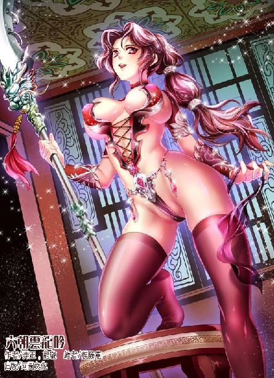

第65集·汉宫惊变
汉国篇（17/28）
出版日期：2016-06-23
【本集内容简介】
汉国天子觊觎“期姑娘”，居然想给这名程宗扬的小妾封赏诰命，于是赵昭仪也在天子耳边为老父哭求封侯，朝堂上闹成一团……
吕氏后族已无法忍受天子的愚蠢，在朝堂上和天子干起来：天子的左臂右膀在算缗中手脚不干净，通通掀倒！西邸居然卖官给逆贼的友人，云家立刻中箭！程宗扬还抱持侥幸之心，谁料才过了一天，天子跟昭仪干得正爽时马上风——死了！
而这还不是最可怕的发展……
※ ※ ※ ※ ※
封面人物：云丹琉

封面人物：云丹琉（暗色版）
南宫，玉堂前殿。
御座旁，两盏一人多高的连枝灯光焰四射，将大殿映照得灯火通明。几名戴着貂蝉冠的中常侍立在御座两侧，乌黑的袍服犹如群鸦。
天子刘骜拿着一册竹简仔细看着，脸色越来越阴沉，还没看完，他就按捺不住，挥手将简册摔到地上。
“啪”的一声，皮绳断开，竹简在大殿上四处乱飞。刘骜尚不解气，一脚将御案踢翻，咆哮道：“好大的胆子！”
唐衡、徐璜、左悺、具瑗等人低着头，两眼看着鼻尖，大气也不敢透一口。中行说倒是满不在乎地扬着脸，但这会儿也识趣地闭紧嘴巴。
一名小黄门爬在地上，轻手轻脚地将散落的竹简一一收拾起来。
蔡敬仲脸色苍白得像死人一样，没有一丝表情，语调也没有丝毫起伏，“非止京师一地，各郡国商贾名下田地，亦被豪族侵吞。大司农宁成，籍在宛郡，日前以铜铢五贯，购地千亩，每亩仅五文。”
刘骜愈发恼怒。他专门任命宁成为大司农，主持算缗，没想到连他都在其中上下其手。
蔡敬仲无视天子和几位中常侍的脸色，旁若无人地说道：“算缗令一出，官吏视商贾如肥羊，无不染指。连鸿胪寺这等所在也不甘其后。大行令某，前日便一掷百万，在雍门外购置了大片田地。”
徐璜心里骂了句娘，硬着头皮想站出来说两句，一看天子的脸色，还是悄悄缩了。
“购地之事，奴才未曾听闻。”唐衡道：“但雍门外那片田地奴才倒是知晓一二，那片田地仅五十余亩，大行令若出钱百万，每亩作价近十枚金铢，与市价相差无几。至于大司农所购田地，奴才听闻均为河滩荒地，非是借机勒索，还请圣上明鉴。”
徐璜一阵惭愧，小程前天又专门悄悄给自己塞过一叠可以换钱铢的小纸片，托付自己有机会的话，在天子面前关说一二。结果事到临头，自己竟然还不如老唐仗义。他连忙站出来，“奴才听说也是如此。”
刘骜冷冷扫了他们一眼，过了片刻才道：“宁成既然买的是河滩荒地，便也罢了。你们方才说的那个大行令，拿着朝廷的俸禄，却借着算缗的时机，巧取豪夺，无耻之尤！”
徐璜一颗心不由提了起来，只听天子厉声道：“着令革职，以儆效尤！”
众人噤若寒蝉，谁也不敢开口替那个倒霉的大行令说情。徐璜怨恨地看着了蔡敬仲一眼：好你个姓蔡的，要不是你还欠我钱，我今天非跟你没完！
天子已经发话，一群中常侍都老实听着，可偏偏还有人不满意。中行说神情肃然地说道：“奴才以为，应将大行令程某下狱，明典正刑，震慑群臣。”
此言一出，众人无不侧目。震慑群臣？你还真有脸说啊。满朝的豺狼虎豹，你逮个蛤蟆就算攥出尿来，能震慑得了谁？
唐衡谏道：“奴才以为不可。大行令所为虽有出格，但尚不足下狱。”
蔡敬仲声音又尖又细，森然道：“震慑不法，莫如大辟。”
这个更狠啊，就因为每亩地花了不到十枚金铢，直接斩首。别的不说，吕家那几位大伙都心知肚明，他们借着算缗的机会大肆并购土地，每亩地给两枚金铢都是多的。结果花十枚金铢买地的杀了，花两枚金铢买地的还好端端的，如何服众？
中行说附和道：“家属没入宫中为奴！”
徐璜终于站不住了，“噗通”一声跪下，伏地恳求道：“如此处置，只怕有辱圣明。圣上，切切不可啊！”
刘骜也知道为了这点破事，革职已经有点过了，但借机不敲打敲打那个姓程的一下，实在咽不下这口气。这都多少天了，他竟然还跟没事人一样。那个娇滴滴的小美人儿，在他身边不知受了多少荼毒……
刘骜哼了一声，扫了蔡敬仲一眼。这个姓蔡的太监虽然是太后的人，倒是很会察颜观色，巴巴地翻出这么个把柄，跑来献殷勤。谄媚是谄媚了些，但比起那帮眼里只有太后的阉奴总要强些。刘骜心里给他评了八个字：虽不可信，尚可用之。
天子迟迟没有开口，众人心里都不禁七上八下。徐璜手心里捏了一把冷汗，生怕天子真应允了姓蔡的，砍了小程的脑袋。自己拿了人家的钱，眼睁睁看着他掉脑袋，这钱拿着也不踏实。唐衡是担心天子如此处置，恐被人腹诽。具瑗在操心真要大辟，这诏书该怎么写？若按朝廷律令，程某人只买了块地，罪不至死，少不得再编几条罪名出来。中行说这会儿倒是把罪名想好了，就说他干扰朝廷法令，天子为之震怒，杀一儆百。至于蔡敬仲怎么想的，就没人知道了。
静默中，殿后隐隐传来一阵儿啼。刘骜侧耳听了片刻，脸上的戾气倒是淡了少许，眉眼也柔和了几分。
刘骜尚无子嗣，宫里突然多了一个粉雕玉琢的小人儿，刘骜喜爱之余，也有几分好奇。今日特意把定陶王召到玉堂前殿，准备议事之余逗逗小家伙，感受一番天伦之乐，没想到蔡敬仲却不让人消停，抛出一堆黑材料，坏了自己的心情，连留在殿后的定陶王也忘了。
刘骜道：“欣儿怎么又哭了？”
左悺小心道：“回圣上，殿下入宫未久，想来还有些怕生。”
“欣儿的奶妈、侍女不都叫到宫里来了吗？怎么还怕生呢？”
“今日恰好盛姬出宫了。”左悺道：“盛姬有个姐妹在定陶王邸，专门接盛姬往王邸小住。娘娘也答应了，让她在王邸住一晚，明日回来。殿下找不到人就会哭一会儿，不妨事的。”
刘骜点了点头。盛姬去王邸探亲也在情理之中，何况皇后已经答应过的。倒是这一打岔，刘骜想起定陶王入宫之事，姓程的也出了些力，处置太过，未免不近人情，于是道：“暂且革职。明日发尚书台。”
具瑗躬身道：“奴才遵旨。”
小黄门已经捡好竹简，但已经乱了次序，只能胡乱包在袖中。刘骜在殿中踱了几步，然后对蔡敬仲道：“奏书中的事朕已经知道了。只要忠心办事，朕绝不吝赏赐。你去吧。”
蔡敬仲伏身叩拜，然后倒退着出了玉堂前殿。
刘骜又看了几封奏疏，唐衡、徐璜等人各自奉诏离开，殿内只剩下中行说。
“我觉得还是把他下狱好些。那家伙瞧着就不是什么老实人，关他几天，肯定是利国利民的大好事。”中行说道：“最好连家眷一起关进北寺狱。”
刘骜没有作声。
中行说撺掇道：“人非圣贤，只要肯查，少不得有些把柄。要不我查查？”
“刘建呢？”
“刘建啊？回来了。说那边看得太紧，他连人都没见着，东西倒是送出一大堆。不过听说姓程的家里有个母老虎，不大容人……”
“欣儿呢？”
中行说问了一声，然后道：“刚睡着。我把他抱来。”
“算了，让他睡吧。”刘骜起身道：“去昭阳宫。”
※ ※ ※ ※ ※
程宗扬怎么也想不到，除了一门心思想弄死自己的蔡太监，宫里这会儿还有闲人正挖空心思地在给自己找罪名，想把自己送到北寺狱里吃牢饭。
此时他正待在文泽故宅中，为哈迷蚩等人明日的出行作准备。说来自己早就决定将剧孟等人送往舞都，但由于要借剧孟的名头推行纸钞，又耽搁了几天。眼下大局已定，不能再拖了。
鹏翼社那些从星月湖大营退役的老兵们扛着一只只份量极重的小木箱，从地窖里鱼贯而出，运上马车。那些木箱大小只有一尺见方，高仅四寸，重量却超过二百斤，也就是这些老兵才能扛着箱子健步如飞。
车内底部设有暗格，边角都用铁条固定过，木箱纳入其中，盖上厢板，外面看不出丝毫痕迹。
程宗扬道：“这么大的车，能拉多少货？”
蒋安世道：“这种四轮马车是从泰西传来的，最多能载三十石的货，要四匹马才能拉动。”
“四匹马能拉三十石，再加两匹呢？”程宗扬说着一拍额头，“天子驾六，再多两匹就逾制了。”
蒋安世道：“倒不是逾制，而是挽马并非越多越好。比方说吧，像这种四轮大车，一匹马能拉十石的货，两匹马能拉十八石，三匹马能拉二十五石，四匹马能拉三十石——这已经是车马行的极限了。再多的话，六匹马能拉三十七石，八匹马只能拉三十八石。”
程宗扬有点不理解，“六匹马能拉三十七石，八匹只能拉三十八石？”
“没错。马匹体力不同，好马拉得更多些，但马匹数量有上限。多过八匹，能拉的反而越少。所以对车马行来说，通常是用单马或者双马，超过四匹马就不划算了。我们这回要赶路，用的双马，每车加上行李不超过十石，可以最大程度地保证速度。”
这么一说，程宗扬倒是理解为什么天子驾六了。不是用不起，而是从实用的角度看，六匹就是载重量和效率最合适的数字了。
程宗扬道：“速度能到多少？”
“这要看路怎么样了。路好的话，半个时辰能跑四五十里，但跑完马匹就乏了。按秦执事的意思，一来车上有伤号，不能跑得太快，二来要给马匹留一半的力气，一旦出事也好应付。所以在途中设了六处换马的地点，光是备用的马匹就有一百余匹。”
六处换马点，等于不到六十里就换一次马，秦桧的安排的确是够小心的。程宗扬道：“咱们鹏翼社竟然有这么多马？”
程郑在旁道：“是老赵的马，我借来使使。”
“赵墨轩？这哥儿们够意思。哎，五哥，赵墨轩说他以前给岳帅当过书僮，你们认识吗？”
卢景问了下时间，然后摇头道：“岳帅年轻时候的事，要问孟老大了，我知道的不多。”
孟非卿追随岳鹏举的时间最久，如果赵墨轩说的是真话，说不定还见过他。不过那都是二十多年前的事了，真见过也未必还记得一个小小的书僮。
半个时辰之后，三十箱金铢全部装完，其中六辆各装四箱，三辆载客的马车分别装了两箱。这样安排效率虽然低了些，但把可能存在的危险性降到最低，即使有个别车辆出事，也不至于损失太大。并且同时兼顾了速度和舒适性，算是目前能拿出的最周到的安排了。
装完金铢，众人接着装上各种箱笼之类的行李。车上四箱金铢就有七八石，外面堆的行李看起来不少，其实没有多少份量，大都是些用来掩人耳目的寻常物品。
众人拿出的最后一件行李，是一块又黑又亮、光可鉴人的板子。
高智商一脸稀奇，“这是哪儿来的屏风？怎么才一扇？”
程宗扬道：“什么屏风？这是案板，专门用来剁馅的。”
高智商没话找话地说道：“这么大的案板，能剁好几百斤馅吧？”
“哎？你在这儿混什么呢？你明天还得赶路呢，怎么还不去睡？”
算缗令一出，高智商和义纵就一直在大司农府署泡着。两人臭味相投，混得亲如兄弟，高智商在义纵面前把游冶台吹得天花乱坠，让义纵眼馋得要命。这回义纵接到诏命，赴舞都上任，非要把高智商也拉上。
程宗扬也挂记着自己与云如瑶的婚事，正想找人去看看七里坊的婚居修建得怎么样了，两下一合计，索性打发高智商走一趟。
高智商涎着脸道：“师父，我想出去一趟……成不？”
“去哪儿？”
高智商嘴里打了个含糊，“我跟那谁……约好了。”
程宗扬没听清楚，以为他约的不是义纵，就是冯子都那帮狐朋狗友，随口问道：“谁？”
“还能是谁？”高智商臊眉搭眼地说道：“不就是小云吗……”
程宗扬奇道：“你早干嘛呢？这都半夜了。”
“小云她爹睡得晚……”
这个理由很过硬，但程宗扬毫无同情心地一口回绝，“不行。这几天外面不太平。”
“就隔一个里坊，要不了多少时候。真不行，我带刘诏一起去。”
程宗扬没搭理他。
高智商软磨硬泡，又扯上旁边的人帮他说话。这小兔崽子自打被哈大爷灌过泻药，泻出半桶肥油，整个人突然开了窍，嘴巴特别会来事，最后不光程郑，连卢景也开了金口，程宗扬只好让步。
“要敢耽误正事，等哈大爷醒了，我就请他再配副狗皮膏药，把你前面招祸的玩意儿贴上。”
高智商举起手，发誓道：“师父！我向你保证，绝对不会耽误事！刘诏！刘诏！快跟少爷走一趟！”
高智商叫上刘诏，兴冲冲地一溜烟出去了。
卢景道：“你这徒儿，可不大像你。”
“别说我了，连他爹都不怎么像。真不知道随着谁了……”程宗扬说着，心里浮出个念头，顿时心下“咯噔”一声，赶紧把这个念头抛开。
说话间，敖润匆匆进来。程宗扬讶道：“你不是在宫里吗？出了什么事？”
“徐常侍让我传句话，”敖润压低声音道：“天子方才下诏——程头儿，你被革职了。”
程宗扬脑中一晕，天子是要对自己动手了吗？就因为赵合德？我还往宫里给你送过一个呢！真是新人上了床，媒人丢过墙，卸磨杀驴啊这是！
“说仔细些！”
“徐常侍也没说太细，只说姓蔡的在天子面前搬弄是非，揭出宁成和程头儿你买地的事。”
“买地？我还没买呢！哪个姓蔡的？”程宗扬说着心下一凉，不会是他吧？
敖润道：“我琢磨着，可能是……”
话音未落，韩玉飞身进来，“蔡常侍来了。”
程宗扬一边往外走，一边满心纠结。自己忙得脚不沾地，蔡敬仲还要往自己后院放火，实在太混账了！问题是自己怎么见这个混账呢？一见面就拍桌子，狠狠臭骂他一顿？痛快是痛快了，要万一他来个破罐子破摔呢？后果不堪设想啊。
要不抱着他的大腿苦苦哀求，动之以情，求他放自己一马？他倒是痛快了，自己脸面还要不要了？
一脸冷漠，见了面冷哼一声，表示自己对他那点小勾当不屑一顾，摆出一副高深莫测的姿态，让他不敢小看自己？问题是自己心里没底啊。蔡爷一高兴，再给自己捅个天大的篓子出来呢？
心下计议未定，已经进了迎客的大厅。正看到蔡敬仲戴着一顶斗笠，一本正经地跪坐在席前。
这孙子还有脸来！程宗扬火冒三丈，恨不得一脚踹过去。
蔡敬仲倒是泰然自若，他摘下斗笠，放在席侧，露出他那张没有表情的死人脸，然后用他又尖又细，跟活鬼一样阴恻恻的声音说道：“大喜啊！”
程宗扬顿时被噎住了，居然有脸来报喜，还有你那表情，到底是报喜还是报丧呢？
程宗扬噎了半晌才顺过气来，“喜从何来？”
“主公诸事繁忙，蔡某设法为主公分忧，已然初见成效。”
这话说的……要不是自己知道这货干了什么鸟事，还真被他蒙住了。
“你说的替我分忧，就是在天子面前搬弄是非，打我的小报告，捏造谣言，好让天子革了我的职？”
蔡敬仲谦逊地说道：“这都是蔡某应该做的，主公不必多礼。”
“看清楚！我这是跪坐，不是跪谢！”
程宗扬在蔡敬仲对面坐下，两人只隔着一张几案，要想抽他耳光，只是一伸手的事。话说回来，他要想抽自己耳光，也是一伸手的事。
程宗扬压抑下伸手的冲动，诚恳地说道：“大哥，我知道你着急，可你也不能就这么坑我吧？”
看着蔡敬仲眼中露出的诧异，程宗扬心下发狠：你再给我装？我看你还有什么说的！
“你不就是嫌我事多，怕我办大行令的差事，耽误你实验室的事吗？大哥，不是我说你，你这也太自私了！”
蔡敬仲好整以暇地说道：“还有五日，便是仲冬。”
“嗯？”程宗扬知道仲冬是指入冬的第二个月，也就是下个月，但这跟大家要谈的有什么关系？
“每逢仲冬，天子循例降旨，慰劳四方诸侯。”蔡敬仲道：“淮南王、赵王事败，如今汉国共有十位诸侯，梁王、燕王、齐王、代王、江都王、广川王、清河王、胶西王、河间王、定陶王。而大行令的差事，就是奉诏施谕四方。”
蔡敬仲话说到这里，程宗扬就明白了。也就是说从下个月开始，自己这个大行令就不能摸鱼了，要依次去各处诸侯的封地，降旨慰劳。十个诸侯国，自己要跑下来，年都得在路上过了。
“蔡某知晓主公不可轻离，便设法替主公辞了大行令的差事。”
二话不说就把主公坑了，还臭不要脸地专门跑来表功，我偏不让你得意！
程宗扬黑着脸道：“你怎么知道我不想去呢？告诉你，我正打算往胶西国去一趟！你把我饭碗砸了，我还怎么去！”
蔡敬仲略微皱了皱眉，“胶西国？胶西倒是不用去。”
程宗扬奇道：“为何？”
“胶西王刘端生平不近妇人，不修宫室，不蓄财物，不收租赋，不置卫士，不居其国。每每丐服出游，居无定所。”
程宗扬听得目瞪口呆，诸侯王里还有这种奇葩？这位胶西王不会是入了丐帮吧？不近妇人还好说，也许他是同性恋呢？不修宫室、不蓄财物也可以理解，也许是品行高雅，不在乎这些身外之物呢？不收租赋？这个就太神了，已经超越了圣贤的境界，完全可以封神了。
蔡敬仲谆谆劝导道：“主公若是要去胶西，最好是布衣微行，以大行令的身份大张旗鼓前往，反而见不到人。”
程宗扬点头称是。自己不过是借题发挥，可怎么也想不到会遇上胶西王这么个奇葩，只能认栽了。
“大行令虽然没有了，但关内侯的爵位、大夫的官衔、常侍郎的加官尚在，无非是不用办那些无关紧要的公差而已。”
程宗扬继续点头称是。蔡爷都做得这么周全了，自己还有什么好说的？
程宗扬兴师问罪而来，偃旗息鼓而罢。接下来，两人进行了一番亲切而深入的交谈，程宗扬诚恳地表达了谢意，蔡敬仲友好地表示自己只是履行职责，对主公的谢意是万万不敢当的，然后顺便又对实验室的设计和进度，提供了一些中恳而详实的意见。双方在会晤中总结了以往，展望了未来，在诸多方面达成共识，为下一步合作奠定了坚实的基础。最后程宗扬亲自把蔡敬仲送出门，一直目送他远去，才悻悻然回到宅中。
※ ※ ※ ※ ※
天色未亮，车马已经准备停当，十几匹膘肥体壮的高头大马早已休养多时，此时刷洗得油光水滑，套上马具，一匹匹精神十足立在车前。车上安排了两名驭手，途中可以轮换。载客的一共三辆车，剧孟不由分说占了最前面一辆，车上除了他，还有奴婢淖氏。哈迷蚩单独乘一车，青面兽留在洛都，无法随行，这会儿正扒在车边，把两只洗剥干净的肥羊往车里塞。
随行众人以吴三桂为首，蒋安世作为副手协助。队伍里除了鹏翼社和星月湖大营的老兵，还有三名面生的汉子。这三人是剧孟的铁杆亲信，剧孟被刘丹骗走囚禁，不久前才与他们联系上，此时三人守着剧孟的大车寸步不离。由于郭解仅存的幼子也在车上，王孟也约好带人护送，但眼下风头刚过，缉拿的文书还未撤下，不好直接露面，因此在城外守着，约好出城之后再汇合。
哈大爷还在棺材里封着，送行就免了。延香为了照料郭解的幼子，也同车而行，敖润这会儿正攀在车边，咕咕哝哝不知说些什么酸话。程宗扬想嘱咐几句都挤不过去，只好走到剧孟车边，说了几句送行的话。
剧孟为人豁达畅快，若是换成别的“大侠”，这会儿多半要硬撑着大侠的体面，死活留在洛都，好表现一下大侠的风范。剧孟压根儿没什么废话，卢景过来一商量，就答应去舞都。此时离别，他倚在榻上笑道：“哥哥留在这边也帮不了你什么，先去舞都玩两天，等你忙完，过来找哥哥喝酒。”
“行啊。”程宗扬一口答应，然后把那只锦缎包裹的玉匣放到他榻侧，叮嘱道：“若是身体不适，就把这个吃了——千万别丢了。”
剧孟抽了抽鼻子，神情猛然一震，“好东西啊。不过哥哥可用不上，还是留在你手边好些。”
卢景道：“甭废话了。让你拿着你就拿着。也不是光给你吃的，后边的哈大爷要是不好，就给他用。”
“成啊。反正用不了还是你们的。”剧孟也不矫情，随手收起玉匣。
程宗扬俯过身，在他耳边道：“有件事一直没跟你说——眭弘你认识吧？”
“我的兄弟。”剧孟微微摆头示意，“跟他们一样，过命的。不过我听说他说了不该说的话，如今生死不明。”
“他如今也在舞都。”
剧孟神情微震，他知道其中有些犯忌讳的事，只点了点头，然后笑道：“老四！你居然也来了！太给哥哥面子了啊！”
斯明信冷着脸将一柄带鞘的长刀丢在他车上，然后悄无声息地迈出一步，消失在檐下的阴影中。
剧孟抽刀出鞘，眼中不由流露出些许温情。这是他用了多年的佩刀，当日被刘丹拿走就不知下落，赵王事败，更不知流落何方。没想到斯明信竟然能把它找回来，这里面不知道花了多少心思。
程宗扬道：“剧大侠，保重。”
剧孟抬起头，笑道：“放心吧，我还等你们来喝酒呢。”
※ ※ ※ ※ ※
高智商说到做到，天不亮就回来了，这会儿也在出发的队伍里，他拍着胸口对青面兽道：“兽哥你尽管放心！哈大叔交给我了！只要我还有一口气，就没人能动哈大叔一根汗毛！富安！富安！趁这会儿还没走，赶紧给我弄点漆！”
“要漆干嘛啊？”
“哈大叔这棺材不好看，我给他画个漂亮的……”
刘诏赶紧拉住他，“素点好！素点好！”
话还没说完，敖润就挤过来，拉住刘诏的手嘱托道：“你嫂子那边，你可得多看着点啊。”
“没过门呢，这就嫂子了？”
“甭管过没过门，你都得替我看着点。”
高智商道：“敖哥你尽管放心！嫂子交给我了！”
“一边去！盯的就是你！”
“哎哟敖哥，咱们认识这么久了，你还不了解我？三十以下的，我连看都不带看的！本衙内好的就不是那一口！小云除外啊。”
正闹腾间，车边多了一个人。郭解不知何时进来，正低头看着自己尚在襁褓中的幼子。
延香把孩子递了过来。郭解微微一怔，想要让开，最后还是迟疑着伸出手，接过自己的骨血。
郭大侠显然也没怎么抱过孩子，动作比王孟还要僵硬几分。那孩子已经睡着了，在襁褓里发出均匀的呼吸声。他就像托着一件易碎的瓷器一样，丝毫不敢使力。
延香道：“郭大侠，这孩子叫什么名字？”
“还没有起大名。”
“起一个吧。”
郭解沉默片刻，“多年前，武穆王曾玩笑说，我会有一个儿子，叫郭靖。就给他起一个单名：靖。”
郭解把儿子抱在手中，轻轻搂了一下，然后交还给延香，转身走到剧孟的马车旁，两位生死之交伸手相握，久久没有松开。
晨钟响起，紧闭的宅门缓缓打开，吴三桂当先驰出，接着后面的车马络绎起步，踏上行程。
程宗扬一直送出上津门，看过车马驰过洛水的浮桥，才驱车返回。
革职的诏书尚未颁下，程宗扬乘的仍是青盖官车，守门的士卒略无阻挡，便即放行。
敖润道：“要不要顺路去见云三爷？”
程宗扬叹了口气，“今天哪儿都不去，回去等诏书吧。”
※ ※ ※ ※ ※
死太监又尖又细的声音就像一千只蚊子一样，没完没了地在耳边回荡。具体说了些什么，坦白地讲，自己也没大听明白，主要是因为文辞太古奥了，也不知道是哪位刚通过诏举新进的侍诏当值，拿出写大赋的功夫，从头到尾都不说人话。不过最后一句自己倒是听懂了。
“……着即革职！钦此。”
中行说放下诏书，阴声怪气地说道：“程大夫，还不谢恩？”
“臣，谢主隆恩。”程宗扬敷衍地说了一句，伸手去接诏书。
中行说却没放手，“呦，你这表情……不服气啊？”
“雷霆雨露，皆是君恩。臣不敢不服——该接诏了吧？”
“别啊。你这么跪着说话，我瞧着挺好，多说几句啊。”
程宗扬气定神闲地说道：“你说吧，我听着呢。”
“你怎么得罪姓蔡的了？”
“我哪儿知道？”
“还嘴硬呢。姓蔡的那人，啧啧啧……得罪了他，你就等死吧。”
中行说奚落了几句，见程宗扬一脸无所谓，也觉得没趣，拉长声音道：“你的家眷呢？怎么不出来接旨？”
“臣尚未婚配，并无家眷。”
“没有家眷，难道还没有姬妾吗？”
“小妾也能接旨？朝廷给诰命吗？”
“咦？你说什么？”突然间，中行说像被人踩了一脚的小公鸡一样，浑身的毛都炸了起来。
程宗扬不由纳闷，这是又捅到他哪根肺管子了？一边道：“我说——妾侍只算奴婢，让她接旨，可没这种规矩。要不朝廷诰封她当夫人？”
“说的好！”中行说猛地一合掌，“太好了！”
程宗扬一头雾水，这死太监什么毛病？自己拿他开涮寻开心呢，他这么手舞足蹈的，莫非是失心疯了？
中行说乐了一会儿，终于安定下来，用手指点着他说道：“你提醒了我！提醒得非常好！好主意啊好主意——你就等着接诏吧。”
程宗扬心里发虚，“接什么诏？”
“当然是你要的诰封啊。”
“别开玩笑，我都被革职了，还给她诰封？”
“怎么不行？”中行说阴声笑道：“封了诰命——可是要入宫谢恩的。”
程宗扬立刻道：“那我不要了。”
说什么呢？让赵合德入宫？那是拿小肥羊往火锅里丢啊。
“真是吃了灯草灰，放的轻巧屁。”中行说冷笑道：“天子恩典，是你想不要就不要的吗？别说活人，死人也得要！”
中行说兴冲冲地扬长而去，留下程宗扬当场就傻眼了。给小妾加封诰命，简直闻所未闻，可这死太监真要干出来了呢？到时候自己不接诏就是抗旨，接诏赵合德就要入宫去谢恩，赵合德一入宫……
自己跟这死太监臭屁什么呢？
程宗扬气急败坏地爬起来，“毛延寿！毛延寿！——毛延寿呢？叫他赶紧收拾画具，马上去昭阳宫！”
紧要关头，程宗扬也顾不了许多，立即打发毛延寿往宫里传话，无论如何也要阻止天子的诰封。
※ ※ ※ ※ ※
昭阳宫内，友通期仔细听着毛延寿带来的消息。
友通期入宫还不到两个月，但居移气、养移体，比起入宫之初那个栖惶无依的孤女，如今的友通期整个人都显得容光焕发，颜色更加娇艳。再加上江女傅的悉心指点，举手投足贵气十足，早已看不出她的市井出身。
等毛延寿说完，她低声问了江映秋几句，然后笑道：“你回去告诉程大行，中行说只是嘴快而已。至于天子，断不会那么做的。若是臣下的姬妾倒也罢了，封了诰命，就好比男子有了官身，为了朝廷体面，天子也不会乱来。”
毛延寿唯唯诺诺地应下，然后也没敢走，一边耐着性子给昭仪画像，一边等着另一边的消息。
长秋宫内，赵飞燕正在给定陶王喂水，听了鹦奴的传述，她手指微微一颤，羹匙中的水洒到了定陶王的衣襟上。
事关自家亲妹，赵飞燕可没有友通期那么镇定。她拿出帕子，抹去定陶王衣上的水迹，柔声道：“欣儿还记得孟舍人吗？就是那个长了胡子，可个子跟你差不多高的优伶——他这会儿在外面，你去找他玩好吗？”
定陶王笑逐颜开，拿起小弓跑了出去。
赵飞燕在后面道：“慢着些！”
等定陶王身影消失，赵飞燕收起笑容，纤柔的眉头微微蹙起。
“昭仪不知道圣上的性子。他要做的事，从不理会旁人。若是他更在意朝廷的体面，就不会下诏诰封，若是他听了中行说的挑动，下诏的话……”
赵飞燕没有再说下去。
罂粟女等了一会儿，然后道：“若是下诏了呢？”
赵飞燕良久才道：“让她赶紧走吧——离开汉国。”
罂粟女禁不住道：“为何？”
赵飞燕看了她一眼，淡淡道：“莫忘了，我也是歌伎出身。”
※ ※ ※ ※ ※
两人的意见都被带了回来，一个认为不足为虑，一个认为迫在眉睫。程宗扬头痛地揉着太阳穴，“会之，这事你看呢？”
秦桧道：“长秋宫已然说得明白，以她的出身，尚且封为皇后，何况区区一个诰命？天子不下诏便罢，若是下诏，便不会顾忌什么体面。”
这和自己所担心的一模一样。程宗扬叹道：“早知如此，就让她跟车队一起走了。”
秦桧道：“长伯刚走，最快也要五日后才能回来。只要能拖过这五天，长伯一回来，便送她离开。”
“五天……天子那急脾气，恐怕明天就见分晓了。若是真下了诏书，我们就得立刻跑路。干！中行说那个死太监！”
这个挨千刀的死太监真是坏了自己大事！这边车队刚走，就出了这么个幺蛾子。现在要是收摊子走人，地下那上百万金铢，可就全打水漂了。这笔钱要是赔出去，自己的程氏商会立马就得完蛋。
秦桧道：“要拖过五天，也不是不可以。”
程宗扬眼睛一亮，“你有主意？赶紧说！别藏着掖着了！”
“属下记得，皇后的父亲还未曾封侯。”秦桧道：“不如让昭仪进言，为其父讨封。”
程宗扬略一思忖，不禁拍案，“好主意！奸臣兄，人才啊！”
秦桧笑道：“主公谬赞了。”
汉国制度，皇后的父亲按惯例都要封侯，但到了赵飞燕这里，由于她出身寒微，父亲又是养父，半点势力也无，至今没有任何封赏。赵飞燕自惭出身，对此不好张口，朝中官员也乐得装聋作哑。
现在掀出此事，可谓一步好棋，给一个与皇后没有血缘关系的市井子封侯，从封号到封地，再到礼仪，朝中起码得吵上俩月。皇后之父封侯之事尚未议定，诰封臣下姬妾这种事怎么拿得出手？有两个月时间，自己用轿子抬，也把赵合德抬到临安了。
“两个女儿一个皇后、一个昭仪，凭什么不给封侯？简直是欺负人嘛！”程宗扬义愤填膺地说道：“也就是这会儿我不是大行令了，不然我就亲自上书，必须给人家封侯！”
秦桧肃然道：“主公仁义之心，天地可鉴！”
程宗扬掰着指头道：“让我算算啊，诏举还没完，一共七科，几百名官员，等着抢太后的权柄；然后是算缗令，在汉国经营的商贾都圈进去了。一边是权一边是钱，再加上岳父的封赏，国事家事天下事全凑一块儿了。很好！光让你折腾我？我也不让你消停！”
程宗扬大力一挥手，“让昭仪找天子闹去！闹得越大越好！”
当晚，天子入宿昭阳宫，春风刚度了一半，昭仪在他身下就哭了。哭诉自己姐妹不孝，姐妹俩在宫里享尽荣华，父亲一把年纪，却流连市井，整日为糊口奔波。自己此时侍奉天子，本该尽心尽力，可一想到父亲的辛苦，就满心愧疚，羞惭得无地自容……总之就是你别光只顾着埋头瞎干了，先把我爹封侯的事搞定再说。
天子啥心情，不得而知。据说中行说在旁边多了几句嘴，被昭仪当即吩咐手下，狠狠抽了他一顿嘴巴，还被天子踢了一脚。
“打得好！”程宗扬抚掌道：“人家女儿尽孝心，这孙子还敢多嘴？罂奴怎么办的事？怎么就没把他抽死呢？”
主公又越说越不着四六了，秦桧赶紧道：“兰台有什么消息吗？”
班超道：“国丈封侯之事，已交付尚书台。台中回奏，皇后与昭仪并非国丈亲生，应当先找到皇后的生父，在世则封侯，已殁则追封。”
程宗扬道：“真能扯啊。这要能找到就出鬼了。”
秦桧喟然叹道：“昭仪整日以泪洗面，听说皇后也为此事开始斋戒。”
斋戒最要紧的不是吃素，而是禁绝房事。好不容易凑了对姐妹花，天子一个都捞不着，能不着急吗？
“重点是拖，可千万别玩过了。”程宗扬道：“万一昭仪来个绝食，逼着天子明天就下诏封侯，那就玩脱了。”
秦桧佩服地说道：“还是主公思虑周全。”
程宗扬指着他道：“看到了吗？这就是奸臣的嘴脸啊。老班，你可千万不能学他！”
秦桧大笑道：“班先生耿介之士，想学也学不来。”
班超笑道：“虽不能至，心向往之。”
※ ※ ※ ※ ※
“你被革职了？”
“上午的事儿，你就知道了？这回是谁给你通风报信的？”
“难道我不该知道吗？”
“应该！”程宗扬果断道：“谁敢说不应该，我第一个抽他！云大小姐，这时候咱们就别提这些煞风景的事了吧？”
“哎哟，一提革职你就软了？好可怜哦……”
程宗扬赤条条躺在榻上，云丹琉伏在他肚子上，一手把玩着他的小弟弟，嘲笑着弹了弹他的龟头。
“我是分心了好不好？再说你哪只眼睛看见我软了？我这硬得都能鞭上碎大石了……住手！”程宗扬大叫一声，“你以为这是黄瓜啊！还带掐的？”
云丹琉吃吃笑道：“还硬得碎大石呢……你怎么不说你练过童子功，刀枪不入呢？”
“练没练过，你试试就知道。”程宗扬冷笑道：“某人哪次不被我弄得哭爹喊娘的？这会儿给我装淡定……”
云丹琉气恼地在他腰上拧了一把，“我哪次被你弄得哭爹喊娘了！”
“就这次！我先让你三招！你不是想女上位吗？”程宗扬一拍肚子，“坐上来，自己动！”
云丹琉啐了他一口，“想得美！”
程宗扬翻身把她压到身下，笑道：“那你躺好，我来动。”
“不要……”
“开什么玩笑？我家兄弟让你玩了半天，那都白玩了？”
云丹琉撑开他，“今天不是安全期。”
安全期的概念还是程宗扬给云丹琉灌输的，结果云大小姐对此十分上心，只要有怀孕的风险，就绝对不允许他沾身。即便程宗扬不惜自毁形象，拿出自己当实例，表示自己开过这么多枪，一次都没有命中过靶心——当然不能说自己枪法有问题，更不能说子弹有问题，只能说运气——云大小姐也不肯冒险。
说实话，程宗扬也能理解她的心情，毕竟云丹琉跟那些侍奴不一样，未婚先孕的风险她无论如何也承担不起的。问题是云丹琉明明知道自己在危险期，还来挑逗他，让他怎么能忍得住？
“你可以找蛇奴啊。”云丹琉给他出主意。
“用嘴巴。”程宗扬讨价还价。
“不行。”云丹琉拒绝，“你每次都那么久，我舌头都酸了，你还不射。”
“还每次？你就口了半次好不好？”
“我舌头就是酸了！下巴也酸了！一喝粥就恶心。”
“恶心？我又没射你嘴里，你恶心什么？”
“想想就恶心。”
“好了好了，反正是你把它弄硬的，你说怎么办吧？”
云丹琉十分硬气，“是它自己要硬的，我才不管。”
云丫头软硬不吃，程宗扬只好转变方式，诱惑道：“要不要打个赌？”
“赌什么？”云丹琉果然上钩了。
“我只用五虎断门刀，就能破掉你的刀法。”
云丹琉嗤笑一声。五虎断门刀并不是什么高明的刀法，白武一族的五虎断门刀无非是把流行的单刀改成双刀，又增添了一些变化，但真正精妙之处，在于白武一族的特殊血脉。程宗扬的五虎断门刀自己又不是没有见识过，真正的精妙之处只是虚有其表，想破掉自己的刀法，只是痴人说梦。
“你要输了呢？”
“躺平任你调戏！”
云丹琉啐了一口，“来吧！”有架打她可不想错过，尤其是能揍他一顿，也好挽回自己在床上屡战屡败的颜面。
“别急啊，要是你输了呢？”
云大小姐是个痛快人，“我要输了，就给你口。”
“不行。”程宗扬笑眯眯道：“你要输了，要用你后面，让我爽一下。”
云丹琉顿时玉颊飞红，“作梦！”这个可恶的家伙，居然敢打自己后面的主意——把自己当成那些侍奴了吗？真是色胆包天！
程宗扬哂道：“我就说嘛，还没开始比，你就知道自己一定会输，听到赌注就吓得不敢赌了。”
“谁说我不敢！”云丹琉抽刀在手，然后挑起唇角，“我要是赢了，从现在到你和姑姑成亲，都不许你碰别的女人！”
程宗扬眼都不眨，“一言为定！”
云丹琉将她的青龙偃月横在胸前，还没有出手，就散发出一股逼人的气势，显然这些天与卓云君的切磋，使她在刀法上大有进境。
程宗扬拿出双刀，左手一柄是普通的钢刀，右手一柄则像生锈了一样，从刀尖开始，直到刀锋中间的部位都黑乎乎的，凸凹不平。他双刀一前一后，使了一个惯用的起手式。
云丹琉踏前一步，刀尖微微一挑，气势陡然拔升。只有她自己知道，这些天与卓云君的交手，自己进境最大的并非刀法本身，而是相应的身法和步法。以往她专注于刀法的犀利，刀光纵横，快意非常，可虽然气势如虹，却往往把气势放出去就收不回来了。
直到与卓云君交手，一开始卓云君仅凭借身法，就将她的攻势尽数化解，云丹琉才意识到自己的不足，在身法和步法上下了苦功。这方面，云丹琉有得天独厚的优势——她那双让程宗扬爱不释手的美腿，最大的特点就是够长。别人要两步的，她一步就能到位，寻常女子就是施展与她同样的刀法，也很难有她那样凌厉逼人的攻势。
龙刀微微挑起寸许，然后青光一闪，直劈下来。云丹琉进境的第二方面，在于凝炼，她摒弃了那些看起来声势惊人，然而并非必要的动作，刀法更加洗练，也更加简洁。比如这一记直劈，她将暗藏的变化统统抛弃，刀锋以最短的距离准确地直劈而下，攻击迅捷和高效。
程宗扬不慌不忙，一招饿虎吞羊，左刀抬起，挡住云丹琉劈来的龙刀，右刀犹如蛰伏的饿虎猛然跃出，重重斩上龙刀的刀尖。
程宗扬这一招出手的时机把握极好，攻击的又是刀法最前端的侧面，有四两拨千斤的效果，但云丹琉早已非吴下阿蒙，整柄龙刀浑然一体，丝毫没有使力不均而被他趁虚而入。
“叮”的一声，云丹琉的青龙偃月长刀寸许长一截刀尖被齐齐斩下，断口几乎贴到青龙飞扬的龙须上。
云丹琉难以置信地瞪大美目。以云家的财力，她的随身武器自然不是凡品，这柄青龙偃月随她对敌无数，从来没有半点损伤，怎么会被那柄锈刀斩断刀尖？
一时间，云丹琉忘了出招，惊疑不定地望着那柄毫不起眼的锈刀。
一招就把云大妞镇住了，程宗扬心下得意非常，面上却装得一脸淡定，他挽了个刀花，用感慨万千的口气叹道：“运气真不错，让我买到一段珊瑚铁。”
云丹琉追问道：“买来的？”
“孔家急于用钱，找到郭解，要变卖这柄镶嵌了珊瑚铁的单刀，开价两千金铢，被我买了下来。”
孔氏是汉国大贾，以冶铁而知名，手中珍藏有珊瑚铁也不足为奇。但云丹琉也是懂行的，皱眉道：“两千金铢？太贵了吧！”
“是不便宜，但难得的是这段珊瑚铁正好是弧形，能镶嵌在刀上。”
珊瑚铁用来打制成兵器，锋锐无比，但由于珊瑚铁本身坚固异常，极难像铁料一样熔炼，大多是在原有形状上略作加工。比如程宗扬的珊瑚匕首，本身份量是这段珊瑚铁的好几倍，但要想改造，顶多绑在矛上，当个枪尖。大部分被熔炼的珊瑚铁，往往出自机缘巧合，难以重复。也正是因此，珊瑚铁才被武二那种江湖人视为骗人的假货。
而这段珊瑚铁虽然外观难看了些，表面凸凹不平，像是锈迹斑斑的模样，但形状正好是从刀尖延伸到刀身中段，锋刃外露，极为难得。也正是因此，程宗扬才不惜千金，把这柄“锈刀”买了下来。
“最难得的是这个弧度，”程宗扬指着刀身道：“你发现了吗？这段珊瑚铁形状跟你的刀形一模一样。”
云丹琉又惊又喜，“是给我的吗？”
“那当然！我当时一见，心里就想，正好能给我的小丹丹用啊，这还说什么呢？买啊！别说两千金铢了，就是两万金铢、二十万金铢！我也得给你买！”
云丹琉眉开眼笑，“谁是你的小丹丹？肉麻死了！哼，算你还有点良心。”
她接过那柄锈刀，爱不释手地来回翻看。果然和程宗扬说的一样，这段珊瑚铁是镶嵌在刀身上的，取下来移到自己刀上，正好合适。自己的青龙偃月刀多了这段珊瑚铁，必定如虎添翼。
“红粉赠佳人，宝刀也赠佳人，够有诚意吧？别光顾着看刀了。”程宗扬提醒道：“我们可是打过赌的——一招你就输了啊。”
“不行。”云丹琉抚摸着刀上的纹路，头也不抬地说道：“你骗我。”
“我怎么骗你了？我用的是不是五虎断门刀？是不是破了你的刀法？愿赌服输啊，云大小姐，你可不能拿了刀就耍赖啊。”
“不行就是不行。”
“那你把刀还给我。”
“那也不行。”
“不带你这样的啊！”
云丹琉头摇得拨浪鼓似的，“不行不行不行就不行！”
“要不我就去找云三哥，说你骗了我的刀。”
“你敢！”
“我怎么不敢？谁让你输了不认账，骗了我的刀就要走？”
“你把我的刀弄坏了，我还没让你赔呢。”
“你手里的是什么？”
“这是你送给我的。”
“蛇奴！蛇奴！去把云老哥请来！”
云丹琉冷笑道：“我三叔去偃师盘账了，要后天才能回来，你就是叫破喉咙也没用！”
“那就去请云六爷！他可是刚回来。”程宗扬叫道：“蛇奴！你去告诉云六爷，让他评评理，云家大小姐就这么骗人的？他们还管不管了！”
“别叫！”云丹琉赶紧捂住他的嘴巴，想了一会儿，勉为其难地说道：“就一次啊。”
程宗扬笑得跟大灰狼似的，“好啊。”说着就要凑上来。
云丹琉一手把他推开，“但不是今天。”
“那是什么时候？”
“那你就不用管了。”云丹琉抬起下巴，笑吟吟道：“反正我答应过你了。至于什么时候，看本姑娘的心情吧。”
程宗扬怔怔看着她，“云大妞，你学坏了啊……”
云丹琉笑道：“都是跟你学的啊，程头儿。好了，我要去炼刀了，这三天不准打扰我，要不然……你想要人家后面，就等明年吧。”
程宗扬还没来得及生气，云丹琉就笑靥如花地贴过来，在他嘴上亲了一口，柔声道：“你最棒了，老公。”
云丹琉翩然而去，程宗扬还在回味着唇上的香气，良久才失笑道：“这丫头真是……”
他转眼一看，蛇夫人刚才闻声进来，这会儿还在房内，不由板起脸，“愣着干什么？没看到主子还硬着呢吗？过来！”
“是，主子。”蛇夫人笑着伏下身子，一边柔媚地扬起面孔，用红唇含住主人的阳具。
※ ※ ※ ※ ※
程宗扬为了自保，被迫往汉国朝堂的天平上丢了一只砝码，这事说来也不算什么大事，汉国列侯数百，多一个少一个算不了什么。可事态的发展完全出乎他的意料。
尚书台一口咬定只能加封生父，养父什么的，根本不在考虑范围之内。虽然大贤董仲舒曾经说过无养则无恩，养父恩情要大于生父，但封侯是世代相传，血缘关系才是最主要的。就好比天子无后，继嗣也只能在近支宗室中挑选，不可能抱个路人家的孩子当养子。如果那样，吕家早就往宫里塞了好几十个娃了。
所以按道理说，尚书台也不是无理取闹，但落到皇后和昭仪身上，就等若断了她们族人晋身外戚的可能。没有外戚撑腰，两姐妹即便贵为皇后、昭仪，也如同无根之萍。
僵持两天之后，大司马吕冀亲赴昭阳宫，拜见天子与昭仪——听说皇后由于挂念父亲，以致抱恙，不见外臣。这倒正遂了吕冀的心意，可以借着拜见天子的机会，光明正大地去见昭仪。
吕冀拿出的方案是双方各退一步，尚书台不再咬定只加封生父，昭仪也退让一步，不再要求封侯。
“封君？”程宗扬奇道：“还有这一说？汉国又不是昭南，不是只有女的才封君吗？”
秦桧露出一丝古怪的表情，缓缓道：“此事倒是有先例的。”
“谁？”
“阳武侯当年入继大宝，岳丈便拟为封君。”
“老头竟然答应了？”程宗扬听着就稀奇，这对老头来说，算是打脸吧。
“侯爷的岳丈，以前受过宫刑。”
程宗扬听老头说过，他岳丈受过罪刑，但没想到是宫刑。问题是赵飞燕的养父可好端端的，下边没有挨一刀，怎么就封君了呢？
这是欺负人啊！
程宗扬拍案道：“让昭仪接着哭！”
转眼便是仲冬，天气愈发寒冷，朝中关于封侯之事却争论得热火朝天。支持封侯与只能封君两派泾渭分明，以少府五鹿充宗为首的一派支持按惯例封赵氏为侯，以尚书台为主力的一派坚持并非亲父，只能封君。
汉国列侯数以百计，皇后之父封侯又是惯例，因此对群臣来说，封不封侯根本就没多大关系。然而对吕家来说，封侯的意味则完全不同。赵氏如果封侯，就相当于多了一家外戚——吕家的权势来自于太后，自然不能容忍出现一个直接的竞争对手，何况赵飞燕如今是皇后，时间站在她一边。因此吕家不遗余力也要阻止赵氏封侯。
这本来应该是两家外戚，吕氏与赵氏的斗争，但赵氏的势力几近于无，结果封侯之事成了外戚与天子暗中角力的局面。
两者数量众寡悬殊。站在天子一边的不及一成，能称得上有份量的，只有名列九卿的大司农宁成、少府五鹿充宗，以及御史王温舒三人而已。而反对封侯的则超过五成，最具份量的大司马吕冀虽然没有表态，可一直首鼠两端的丞相韦玄成这回旗帜鲜明地表示反对。
天子不待见丞相几乎是众所周知，但丞相毕竟是丞相，名义上的群僚之首，他站出来反对，反对封侯的一派声势大振。
至于其余四成则始终保持沉默，这其中就包括大将军霍子孟、车骑将军金蜜镝以及御史大夫张汤，这一派基本都是掌握实权的实力派，不愿趟这漟浑水的心思昭然若揭，但随着天子与外戚争夺话语权的斗争愈发激烈，想置身事外，只能是一厢情愿。
真正的闲人也有，比如被蔡敬仲“陷害”的程宗扬，就顺利地避开了这个是非窝，这些天过得是轻松惬意。
剧孟远赴舞都，程氏钱庄的金字招牌只剩下一位郭解，但郭大侠的名头效果依然拔群，三百余万的纸钞如今已经兑付出去超过半数，不过地窖里的金铢并没有增加多少，而是另有收获。
就在昨日，程宗扬与刚刚返回洛都的云秀峰联手，由郭解作为中人，以每亩四枚金铢的价格，从洛都商贾手中买下一千五百顷土地。其中一千顷由云氏出资收购，五百顷归程氏商会所有，双方一共支付了六十万金铢的纸钞。由于云氏商会手中还握有相当数量的纸钞，双方商定，所需资金由程氏钱庄先行垫付，云氏的出资直接在临安交割给程氏钱庄总号。
这批田地全部是洛都商贾隐匿的田地。王蕙此前私下查访，估计他们隐匿的田地在两千五百顷以上，此时才知道远超此数——仅他们拿出来与程氏钱庄私下交易的就有三千顷。除了出售的一千五百顷以外，另外一千五百顷，他们只肯抵押，抵押金额是象征性的一枚金铢。
程宗扬也不得不佩服这些商贾，遭遇灭顶之灾也没有慌了手脚，或者坐以待毙，而是想尽办法地保全财产。他们拿出一半田地让利给程氏和云氏，换来的是将另外一半田地隐匿在程氏名下，并保留实际处置权。这样他们回旋的余地就多了许多，无论将余下的田地以正常价格出售，减小损失，还是继续隐匿，等算缗令风头过去，再从程宗扬手中赎回，都可以最大限度地避免损失。
三千顷土地涉及到三十户商贾，名义上由程氏商会全部接手。这三十户也是程宗扬与剧孟、郭解一同挑选出来、可以合作的对象，起码能信得过。否则里面有一个如吉氏一样，暗中作为洛都权贵的爪牙为虎作伥，下一个被告缗的，很可能就是程氏商会了。
“洛都这帮商贾着实精明。”程宗扬赞叹道：“以这三千顷田地来说，若是被豪强强行吞并，每亩最多给他们两枚金铢，他们要是死顶着不卖，轻则被官府没收，一文钱都拿不到，重则被人告缗，家产充公不说，还要被强令戍边。现在他们这么一转手，一半中等以下的田地以四枚金铢作价，算是给足了我们人情，另一半中等以上田地还留在手里，按正常价格估算，每亩不会低于十枚金铢。”
程郑道：“上等田地要十五枚金铢一亩。”
“是啊，均价只怕不低于十二枚金铢。算下来三千顷田地，相当于卖出每亩八枚金铢的价钱。仅此一手，就少赔了一百八十万金铢。汉国一年的赋税，也就五百万金铢上下，等于把汉国一年赋税的将近四成都揣到腰包里面。”
程郑笑道：“左右我们也没吃亏。这三千顷田地，我们若是全吃下来，就把人得罪死了。我们只拿一半，又比豪门给的价钱高出了一倍，他们给足了我们人情，我们何尝不是也给足了他们人情？何况不说田地，单是一个纸钞，他们就该感恩戴德了。”
“说到纸钞了，我听说这些天有游侠儿拿着纸钞在九市兑换？”
程郑笑道：“我这还不是跟你学的。那些游侠儿面子虽然比不上剧大侠和郭大侠，但一百金铢，原本也用不着郭大侠那等人物出面。”
程郑全权负责小额纸钞的推行，相对于程宗扬的谨慎，程郑的手法要奔放得多。他通过剧孟和郭解，联络了一批游侠少年，把纸钞吹得天花乱坠。按照他的说法，他拿出这些纸钞，压根儿不是为了挣钱，完全是为了给洛都商贾们排忧解难，送温暖来了。
相比于金银细软，纸钞无论藏匿还是携带，都方便之极。而且程氏钱庄的纸钞兑现不限时间，不限地域，不收取任何费用，更重要的是由宋国官府保证它的信用，可以用来缴纳赋税，比起其他钱庄的飞钱，完全不是一种物品。
洛都游侠儿一方面胆大妄为，另一方面又极端在乎名声，最喜欢的就是行侠仗义，救人于水火。朝廷强硬推行算缗令，已经闹得人心惶惶，他们此时拿着纸钞出现，解决了商贾的燃眉之急，不仅符合他们扶危济困的侠义形象，而且也符合他们对官府法令的一贯蔑视，这种成就感可不是用金钱能衡量的。于是程郑一文钱没花，那些游侠儿便踊跃地行动起来。他们带着纸钞，出没于洛都九市，俨然以商贾的救星自居，丝毫不顾忌官府的存在。
而汉国尚武任侠的风气，使那些商贾十分吃这一套，他们与游侠儿同属市井之徒，彼此属性相近——尤其是面对官府的时候。洛都游侠儿虽然不及郭解的信誉能价值百万，一百金铢还是足够的。结果程宗扬手里的大额纸钞刚兑付了一半，程郑手里的纸钞已经全部出罄。
“可惜才一千张，太少了些。”程郑意犹未尽地说道：“到后来，有些商贾都着急了，一百金铢的纸钞，他们宁肯拿一百一十金铢来换。若是能再多些就好了。”
“饶了我吧。就这点纸钞，我手都快写断了。”程宗扬抱怨道。
“动动笔就能换来一百金铢的真金白银，右手写断我用左手，左手写断我用脚趾头，手脚写断我也心甘情愿啊！”
两人说笑几句，程宗扬有些担心地说道：“会不会太过了？”
“无妨。总共才一千张，而且面值也不高。那些游侠儿人多势众，官府也不愿意轻易招惹他们。”
程宗扬虽然有些担心，但程郑正做得兴起，也不好多说，转而言道：“今天请大哥过来，是想问问跟陶五和赵兄合作的商号，这些天运行得怎么样？”
程郑笑道：“我昨日刚做了笔生意，正要找你。走，我们到外面看看。”
两辆马车停在阶下，旁边守着几名汉子。与星月湖大营的老兵相仿，这些人都是左武军退下来的，不过寥寥数人，虽然身上各有伤残，却是程郑最可信赖的心腹。
程郑打了个手势，一名大汉上前打开车厢。车内放着一堆白色的石头，被阳光一照，石堆上方泛起一层彩虹的光晕。
“这是……水晶？”
那些水晶都是没有处理过的原石，大的犹如磨盘，小的也有脸盆大小。在六朝，普通的白水晶价格并不高，但这批白水晶通透之极，质地极为纯净。六朝虽然有玻璃，不过杂质较多，色彩偏绿，这些白水晶无论琢成器皿还是制成饰品，都大有市场。
程郑一笑，打开旁边的一个箱子。箱内同样是白水晶，但程宗扬拿起一块，发现通透的晶体居然包裹着一些奇特的杂质。之所以奇特，是因为这些杂质在透明的水晶中形成山、树、塔、甚至人物、鸟兽、水草……种种图案。与琥珀有些类似，但色彩比琥珀更加丰富，也更加神秘。各种逼真的图案被透明的水晶包裹着，就像一个缩小的世界一样，栩栩如生。
另一辆车也被打开，里面是满满一车多彩水晶，包括紫水晶、黄水晶、灰色的烟水晶、褐色的茶水晶、黑色的墨水晶，以及色如胭脂的红水晶，一簇一簇，犹如盛开的鲜花一样，琳琅满目。
程宗扬吃惊地说道：“这么多全是水晶？”
程郑点了点头，“全是水晶。寻常的白水晶有两仓，彩水晶和杂质水晶少了点，加起来差不多才一仓。”
程宗扬觉得这两车水晶已经不少了，没想到程郑手笔更大，直接论仓算的。由于在建康开过珠宝阁，水晶的价格程宗扬多少也了解一些，普通白水晶原石以重量计算，大致是每斤一贯，像这种毫无杂质的上等白水晶，一斤起码要一枚金铢。彩水晶价格直接翻十倍。像那种里面含有图案的白水晶，价格更是高昂。
“两三仓的水晶？这得多少钱？”
程郑道：“如今洛都的物价可是天壤之别。与民生相关的无不高企，斗米尺布，价格都翻了一倍，珠玉之类的价格则是水深火热。尤其是城中几家珠宝商，原本就树大招风，算缗额度定得极高，以往生意好时，每日贵客盈门，算缗令一出，商贾之家自顾不暇，权贵之门更是绝足不来。如今门可罗雀，即使降价也找不到买家。”
“单是珠玉，还好说一些，水晶极费做工，那些珠宝商被迫遣散奴仆，空有原石，根本无人问津，只能转手贱卖。说来也巧，这批水晶的原主之子，曾经跟班先生读过几年书，算是有师生之谊，方才谈下来。这批白水晶共计四百石，彩水晶一百二十石，杂水晶四十石，全部买下来，一共花了这个数。”程郑拉住他的手，在袖内比了一个数字。
九万金铢……程宗扬心下了然，这只有正常价格的四分之一。而且这批水晶中不乏珍品，实际价格只会更高。
程宗扬笑道：“有了这笔钱，班先生的学生倒是可以松口气了。”
程郑摇了摇头，“单是这些水晶的算赋，就占了这笔钱的一半。其他珠宝算赋更高，听说有几家经营多年的商贾，甚至准备把金市的店面盘出去。”
“金市的店面？”程宗扬一下来了兴趣，但接着又犹豫了，这时候给商贾大笔现金，等于是雪中送炭，不如天更冷些，自己获利更大。不过老头从来没张过嘴，就对自己提过一次金市的店铺，显然是心里有点刺，这都一把年纪了还耿耿于怀。金市的店铺可遇而不可求，错过这次，往后未必还有机会。
“先跟他们谈谈，如果合适就买下来。”
程郑道：“这批水晶运出去就是几倍利，金市的店铺可是运不走的。”
他负责打理程宗扬与陶弘敏、赵墨轩合作的商号，宗旨是赚快钱，房产、田地一概不沾，程宗扬突然改弦易张要买店铺，他不得不提醒一下。
“不用商号的钱，是我们程氏商会自己买的。需要多少钱，你找老秦。”
程郑明白过来，“那我去问问。”
“五百多石的水晶，起码要二十车才能运完。”程宗扬想了想，“捡最贵的准备两车，下一批运到舞都。其他走洛水，运到丹阳。”
“走洛水的话，要找洛帮了。”程郑道：“这批货太贵重，要找个可靠的人盯着。”
程宗扬笑道：“人好说——差不多快到午时了，正好赶上吃饭。大哥一会儿别走了，就在这儿吃吧，我给你介绍个人。”
“洛帮的人？行啊！”程郑也不客气，笑道：“说来上回吃的醋鱼不错，那厨子还在不在？我明天宴客，借来使使。”
“大哥要想吃醋鱼，我这儿管够。借厨子……哈哈哈，那就不大方便了。”
程宗扬笑着把程郑让到厅中，一面让人去通知何漪莲，一面叫阮香琳过来奉茶。
“伯伯，请用茶。”
望着那个奉茶的美妇，程郑不禁苦笑。自己这位本家兄弟身边多有美色，自己也见过几个，没想到几日不见又换了一个。而且这妇人虽然颇有容貌，但年纪似乎比自家兄弟还大了些……
“上次做的醋鱼不错，再做一道。”
阮香琳应了一声，下厨烹调醋鱼。
等她退下，程郑才委婉地说道：“贤弟年纪虽轻，可这内宠……实在是不宜太多。”
程宗扬打了个哈哈，“也不太多……”
“论起来，这话我原不该说。但你我兄弟，免不得要告诫几句。一来少年戒之在色，二来内宠太多，未免室内不安——唯女子与小人难养也。”
程大哥说的是交心的话，不过你是不知道我屋里的实际情况，有紫丫头在，就算妖精也翻不出花儿来。
程宗扬笑嘻嘻道：“大哥教训的是。”
阮香琳洗手下厨，室内又换了一个美妇。程郑有些奇怪，那妇人衣饰华丽、容貌美艳，显然是养尊处优惯了的，论年纪也比自己那位贤弟大了不少，举止间与刚才那个妇人一样，怎么看都是当过主母的。然而此时，她却像侍婢一样铺摆匙箸，传酒布菜，每看到自己那位贤弟，眼神中都有几分讨好，着实令人不解。
“长伯他们一走，院里猛地空了一大半。”程宗扬道：“卢五哥一直在查军报的事，一大早就跟郭大侠出门了。老秦和班先生去了兰台，云三爷先一步回了舞都，云六爷倒是在，可他不喜饮酒，也不请他了，就咱们两个随便吃点吧。”
“随便些好。”程郑叹道：“这些天天天应酬，我都快吃伤了。”
程宗扬不由失笑，程郑说的天天应酬可不是假话，如今洛都城内的商贾，无不把程郑视为救星，宴客的请柬跟雪片似的，不知堆了多少。今日两人小酌，也算是忙里偷闲了。
程宗扬回头道：“听说你唱得不错，唱一个吧。”
尹馥兰应了一声，然后娇声唱道：“槛外桃花青叶嫩，墙头杏火绿烟新。风光冉冉非前日，物色依依似故人……”
尹馥兰唱得确实不错，以她的修为，气息绵长只是小事，难得是她的嗓音极佳，唱起曲子来，娇柔婉约，虽然比不上六朝最顶尖的名家，但也不逊色多少。
程宗扬与程郑共坐一席，酒止一樽，肴止三味，虽然只是些家常风味，但胜在轻松。
两人边吃边聊，吃到一半，何漪莲才匆匆赶来。
程宗扬介绍道：“这位是洛帮的何大当家，上次议事时见过的。”
程郑抱拳笑道：“程某以往行商，可没少劳烦贵帮。久闻洛帮的大当家是女中豪杰，上次一见，果然名不虚传。”
“程掌柜过奖了。”何漪莲矜持地施了一礼，“我们洛帮守着洛水，无非是混口饭吃，怎么比得了程掌柜生意兴隆。”
程宗扬道：“别客套了，这是我大哥，往后汉国这边的生意，都交给大哥来打理。上次只是议事，这回认识一下。”
何漪莲松了口气，然后嫣然笑道：“既然如此，那就不是外人了。”
她脸上的矜持之色一扫而空，拿起酒樽，小心斟满，然后屈膝跪下，双手将酒樽捧过头顶，“奴婢敬程爷一杯。”
程郑大吃一惊，“何大当家快快请起！这如何使得？”
“大哥，你就坐吧。”程宗扬道：“她敬你一杯，也是应该的。”
程郑看了看自己的贤弟，又看了看洛帮那位大当家，迟疑道：“她是……”
何漪莲含笑道：“幸得主子不弃，奴婢如今也在主子房里伺候。”
程郑拍案道：“原来如此！”
当初议事时，何漪莲只以合作伙伴的身份出席，并没有透露另一重身份。程郑这时才知道，程宗扬为何能对洛帮如臂使指。
何漪莲已经自承是主子的房里人，不用再隐瞒什么，于是放下架子，挨着程宗扬坐下，一边商谈，一边为主人捧盏递巾，小心服侍。
算缗令对洛帮的影响也不小，但有程宗扬罩着，主持算缗的宁成大笔一挥，把洛帮的船只算在洛帮上下数千人头上，以操舟之民对待，只对五丈以上的船只征收算赋，而且网开一面，对于船民的舟楫，不计大小，五丈以上再大的船也只收一算，算到最后，只缴了几万钱，不过十几枚金铢的事。
洛帮躲过一劫，上下都庆幸不已。谁知不久之后，有一大批熟练船工跑来投奔。何漪莲一打听才知道，这些船工多是洛都几家船行的。与船民结成的帮会不同，那几家船行都是传统模式，由家主驱使奴仆经商牟利，算缗令一下，船行被迫遣散奴仆，那些船工无以谋生，只能前来投奔，结果使得洛帮反而借着算缗的机会越发壮大。
一边是结拜的大哥，一边是房中的侍婢，有这重关系在，双方在席间的商谈没有半点争执，程宗扬提出要求，程郑说明货物的种类和数量，着手何漪莲安排船只、拾遗补缺，一顿饭没有吃完，便敲定了船运的方案。
程宗扬道：“我要提醒一点：商会名下的各家商号，生意往来各自结算，不能因为同属一家商会，就只记账不结算。”
何漪莲不解地问道：“左手倒右手的事，再要结算，不是多此一举么？”
“不多此一举，以后怕会出现弊病。我们商会规模虽然有限，但涉及的行业可不少。”程宗扬道：“单是汉国，如今已经有钱庄、绸缎铺、车马行、船行、以及大哥操持的几处店铺，再加上首阳山的铜矿和舞都的七里坊，涉及的行当不下十种，眼下最要紧的不是扩大生意，而是立规矩，宁愿多花些心思，甚至因此耽误生意，也一定要把规矩牢牢立起来。”
程郑连连点头，“正是如此。”
程宗扬道：“至于结算的方式，全部用纸钞。”
何漪莲道：“如果没有纸钞呢？”
“这还不简单？没有纸钞，就到钱庄兑换。”
程郑道：“这样说的话，我的理解是：本部各家商号的交易，尽量通过钱庄来完成，对是不对？”
程宗扬点头道：“正是如此。”
程郑接着道：“假若钱庄暂时没有纸钞，能不能收取钱铢，出具凭证，以此结账？”
程宗扬摇头道：“当然不行。虽然这样更方便，但一定程度上相当于钱庄自己有货币发行权，其弊端与记账无异。我不是不相信大哥，而是这种权宜之计变为成规之后，一旦失控，后果会非常严重。”
“我明白了。”程郑想了一会儿，又道：“如此一来，恐怕有相当一部分纸钞，会在商会内部流通，连年累积，只怕不妥。”
“两方面，一来商会内流通的纸钞越多，说明有越多的钱铢存入钱庄，对纸钞的流通是好事。二来，各商号每年利润缴入总号，大部分纸钞会以利润的方式回流到总部，统一使用，不用担心各处商号会出现纸钞泛滥的状况。”
程宗扬说着叹道：“应该把老秦和老班叫来，他们两个思绪深密，想得更周全一些。”
程郑道：“无规矩不成方圆。我找班先生商量一下，尽快拿个章程出来。”
何漪莲听得似懂非懂，不禁叹道：“原以为做生意就是‘买卖’二字，不料里面还有这么多路数，往后还要请程爷多多指点。”
程郑笑道：“好说好说。”
尹馥兰嫉妒地看了一眼在席间侃侃而言的何漪莲，一边无奈地唱道：“桃叶青青杏花吐，楼头吹笙教鹦鹉。红牙象版按梁州，金缕衣裳美人舞……”
※ ※ ※ ※ ※
秦桧与班超从兰台回来，已经是傍晚时分。
“诸侯的王府都有定制，建造时的式样图须经朝廷审核，以免逾制，兰台也有留存。”班超道：“属下与秦兄翻阅多时，胶西王府的式样图上，并无西井的痕迹。”
程宗扬摸着下巴道：“会不会是后来挖的？”
秦桧道：“这就难说了，须得实地看过才知。”
“算了，胶西国太远，眼下是顾不得了。”
放下此事，程宗扬将下午与程郑的商谈说了一遍，然后道：“班兄，这章程的事，就拜托你了。”
班超道：“属下此前并不通商科，所拟章程只怕是闭门造车。”
程宗扬笑道：“以班兄的才华，一个章程还不是小事？”
“秦兄才能远胜于我，又追随主公日久，章程之事当非秦兄莫属。”班超坦然道：“班某并非藏拙，章程事关商会的根本，一旦有误，班某名声倒在其次，只怕误了主公的大事。”
“汉国与晋宋风气大不相同，我们来定只怕与实情不符。”程宗扬道：“别人我信不过，还得靠你了。”
主公把话说到这个地步，可见知遇之恩，班超心中不由生出一股豪情，朗声道：“既然主公信重，属下敢不从命！”
班超去见程郑，商量章程之事。秦桧道：“主公为栽培班先生也算是煞费苦心了。”
“这边钱庄布局下来，我们在汉国的局面已经仅次宋国，只靠程大哥一人肯定忙不过来，只好硬逼着老班上马了。”
程宗扬跪坐得难受，索性站起来活动一下手脚，“见到徐常侍了吗？”
“见了。徐常侍颇为过意不去，拉着我说了半天话。他提到那天本来想找昭仪，替主公敲敲边鼓，谁知又闹出封侯的事来。眼下不是说话的时候，他也无计可施，只说再等等，看是否还有转机。”
程宗扬笑道：“老徐也算有良心的。”
“属下今日入宫，还遇到一个人。”
“谁？”
“师丹。”秦桧道：“我们在庭中聊了几句，倒是听到一个消息……”
他停顿了一下，慢慢道：“天子召见师丹、何武二人，询问限田之事。”
程宗扬蓦然停住脚步，“刘骜这就想对付豪强了？”
“虽然是意料之外，但也在情理之中。”秦桧道：“刘骜此人器量褊狭，尤恶臣下以大义为名，行谏阻之事。朝中为封侯之事争议不绝，已经触了天子的逆鳞。再加上算缗一事，权贵世家处处插手，从中大肆渔利，以天子的脾性，岂能咽下这口气？”
“刚开始收拾商贾，接着又拿豪强开刀，他以为自己是三头六臂吗？”
秦桧道：“六朝君王中，以汉国天子威权最著。诏令一出，群臣俯首。即便丞相、三公之尊，被天子赐死的，也比比皆是。”
程宗扬默然良久。晋宋两国的君主比起汉国天子的强势，不啻于云泥之别。别的不说，单看宫室的壮丽，就知道汉国天子的威严显赫。吕雉虽然垂帘多年，但天子权威尚在，刘骜在这种传统下继承帝位，一意孤行毫不奇怪。
程宗扬沉下心，问道：“长伯现在到了哪里？”
“按照路程，今晚能到伊阙，明日午时前后入城。”
“让老匡准备一下，明天去舞都。”
“只怕有些仓促。”秦桧道：“连日奔波，人困马乏还在其次，那些马车少不得要检修一番。”
六朝的马车没有橡胶轮胎，即使天子礼敬贤者的专车，也不过是在车轮上扎上蒲草，即所谓的安车蒲轮，道路也是土石路，车辆行驶中受到的冲击力极大，长途跋涉，对驭手、马匹、车辆都是考验。程宗扬也是考虑到这些，才让吴三桂等人休息，换留守的匡仲玉去舞都。但人可以轮换，那些可以运送金铢的四轮马车却换不了。
“安排好修理的人手，最多一天，后天必须走。”
“主公要把合德姑娘送走？”
“天子真要下令限田，然后就是封侯，接下来恐怕真送一道诰封过来。她留在这里风险太大，还是去舞都好些。”
“合德姑娘若是留在这里，我们与长秋宫说话更方便些。”
秦桧说得很含蓄，但话里的意思程宗扬听懂了。换个说法，就是把赵合德握在手里，必要时好与长秋宫的主人讨价还价。
程宗扬玩笑道：“人家姐妹够可怜了，我还是少作些孽吧。”
秦桧洒然道：“主公吩咐，属下自当遵从。”
“我去一趟上清观。先把合德姑娘接过来。”
要接赵合德，随便派一个人去就行，自家主公偏要亲自跑去上清观——居心不问可知。
秦桧咳了一声，“左右是一晚的事，不若见过长伯再走。”
程宗扬虽然挂念观里的美人儿，闻言也只好作罢。
※ ※ ※ ※ ※
“诸王、列侯得名田国中，列侯在长安及公主名田县、道，关内侯、吏、民名田，皆无得过三十顷……”
一名文士拿着简册在厅中诵读，他年纪甚轻，头戴高冠，身着儒服，仪表堂堂，风度翩翩，却是当日在月旦评上大出风头的许杨。
另一名同样来自汝南的名士廖扶也在座，旁边一个相貌平常的少年，却是吕巨君。再旁边，是守卫宫禁的卫尉吕淑、颍阴侯吕马、城父侯吕桃、颍阳侯吕不疑、西平侯吕蒙、屯骑校尉吕让、越骑校尉吕忠、长水校尉吕戟……近二十位吕氏族人共聚一堂，其中官职最低的也是二千石。坐在中间的则是大司马、襄邑侯吕冀。
许杨继续念道：“诸侯王奴婢二百人，列侯、公主百人，关内侯、吏、民三十人。年六十以上、十岁以下不在数中。贾人皆不得名田为吏。犯者以律论。诸名田、畜奴婢过品，皆没入县官……”
许杨念完，厅内静了片刻，然后西平侯吕蒙笑道：“好啊。天子洪恩浩荡，给咱们每人留了三十顷田地，又怕咱们这点田地养活不了家口，干脆把奴仆也限定到三十名——这都是天子的恩德啊。”
这酸话听着都解恨。当下就有人阴声怪气地说道：“这么着大伙都去宫门前磕俩头？天子洪恩浩荡，咱们该谢恩啊。”
“就是就是。”
“谢恩？我哭庙去！”
“一边待着去！哭也论不到你哭！”
吕不疑皱起眉头，开口道：“三十顷虽然少了些，但如今国中兼并成风，富者连陌越阡，贫者无立锥之地。不限制田地，只会使贫者愈贫，富者愈富。”
屯骑校尉吕让年纪比吕不疑还小了几岁，论辈分却是吕不疑的叔父，有这重身份在，言语间也没什么客气的，当即道：“我就不明白了。那些穷鬼没地，跟我有什么关系？凭什么要分我的田地？”
“就是。”卫尉吕淑附和道：“那帮穷鬼好吃懒做，给他们田地还不是糟蹋了？我们呢？辛辛苦苦几辈子，拼死拼活才赚下这么点家业，容易嘛我们？一句话就让我们把田地交出来？天底下哪儿有这种道理！”
“嫌我们地多，要分田地？”长水校尉吕戟一拍几案，“怎么不先把上林苑分了啊！那可是几万顷的地，能养活的人多了！”
吕不疑喝道：“慎言！”
吕戟气哼哼地往后一靠，不再言语。
吕让道：“戟儿这话该打。不过话说回来，上面这位……啧啧，前面弄了个西邸卖官，把太后恨得牙痒，后边又弄了个算缗令，狠敲那帮商蠹一笔，石头都挤出血来了，我听说少府光金铢就搂了上百万。就这还不知足，又把主意打到咱们头上——这是没见过钱还是怎么着？”
吕淑道：“搂的钱多，架不住花钱的地方更多。光是昭阳宫就花了多少？捣腾那点钱全丢里边还不够。听说又在北边圈地，准备大建宫室。这得多少钱才够花啊？你们都拍着良心说，人家日子都过成这样了，不放咱们的血行吗？”
吕蒙道：“放你的血是看得起你！我不管你们啊，反正诏令下来，我们全家就上街要饭去。脸面？那算个屁！”
吕不疑道：“你们这都是干什么？尽说些酸话、怪话、混账话！”
吕让道：“就你高风亮节？就你读的书多？就你忠君爱上，就你仁义是吧？行啊！先把你家的田地、奴婢分了，我看你还得瑟！”
“你——”
“你什么你！”吕让拿出叔父的架势，“你给我跪下说话！”
吕不疑气青了脸，最后硬梆梆长揖一礼，拂袖而去。
“嘁！”吕让哂道：“读了几本破书，连自己姓什么都忘了。乡里的野鸡还知道给她野爹讨个封号呢，这倒好，胳膊肘儿尽往外拐！”
“说起这事了，会不会是那位心里有气，拿这玩意儿给咱们好看呢？”
“那还用说？昭阳宫那个，最不是玩意儿！我瞧着，这限田令八成就是那贱人撺掇的。”
“不会吧？”
“怎么不会？”吕让来了兴致，“前两天出的那本《昭阳趣史》你们都看了吗？哎哟喂，写得那叫个活色生香。我都琢磨着哪天去宫里瞧瞧，那个温柔乡到底怎么温怎么柔……”
吕戟嘻笑道：“要不叔叔也使俩钱，趁人出浴的时候瞧个饱。”
眼看众人越说越不像话，一直没有开口的吕冀咳了一声，“巨君，你来说说吧。”
“是。”吕巨君站起身，恭恭敬敬应了一声，然后道：“各位叔祖、叔伯父的话，侄儿方才也听了。虽然有些气话，但大都是些老成谋国之言。我大汉能有今日，一是靠的天子圣明，二是靠的群臣得力。天子如首脑，群臣如四肢，凑在一起，才能共治天下。缺了哪一个，都是国将不国。”
“这话在理。”吕让道：“真该让不疑那小子好好听听，这才是读书读透了的。我们世家大族才是大汉的顶梁柱，站在那些穷鬼一边说话，失心疯了吧？有道是富生仁义、饥起盗心，那些穷鬼就没一个好鸟！”
“叔祖说的正是。”吕巨君道：“我大汉轻徭薄赋，百姓安居乐业。只要用心耕作，不愁温饱。那些贫者哭诉他们无立锥之地，可又怨得谁来？说到底，是他们好逸恶劳，落到这步田地，都是咎由自取。”
“说的对！”吕淑拍案道：“那些刁民罔顾国法，都杀光了才好！给他们分地，居然也想得出来。”
吕巨君笑道：“这就是侄儿要说的第二桩了，限田令可没有说分地的事。我猜不疑叔方才说的，多半是误会了。限田令从头到尾只说了没收田地，可收上来的田地怎么处置却没提。所以这限田令的意思，没收的田地多半是入了少府。”
“这我可开眼了，抢了商贾还不够，还要抢咱们？天下都是他的。至于这么见不得别人好吗？”
“削诸侯、弱贵戚、抑豪强、掠商贾。”吕巨君微笑道：“这还有什么不明白的吗？”
厅中沉默良久，有人恶狠狠迸出俩字：“独夫！”
一厅人吵了半晌，也没拿出个正经主意，全都是发牢骚。最后众人散去，只剩下吕巨君、廖扶和许杨三人。
许杨道：“天子亲政不及半载，先架空相位，视丞相如无物，又赐死赵王，劫掠商贾，抑制世家，弱枝强干之意决矣。方才公子曾言，天子如首脑，群臣如四肢。天下者，天子与世家共治之。奈何天子一意孤行，欲集大权于一身。所谓独夫，莫过于此。可惜厅中衮衮诸公，只图为一富家翁。”
“肉食者鄙，未能远谋。”廖扶道：“还请主公早做打算。”
吕巨君摩挲着手指，良久道：“我去拜见叔父。你们准备车马。”
许杨道：“去北军大营？”
廖扶道：“去函谷关。”
※ ※ ※ ※ ※
比秦桧预计的快了一些，次日一大早，从舞都返程的车队便风尘仆仆地返回洛都。
“……到了舞都，义纵连马都没下，就直接去了游冶台。先点的是邳家那个少夫人，叫小桃红的，先发恨地弄了几回。又叫来赛玉坠，就是邳家那个小姐，先弄了她前面，又叫小桃红扒开她的屁股，搞了她的后庭……”
高智商眉飞色舞地说道：“游冶台如今名声响得很，那小子就跟老鼠掉到油罐里似的，乐得连衙门都没去。”
吴三桂接口道：“我听陈乔说，有人告七里坊侵占土地、隐匿财物，状子已经递了上去，但因为舞都令没有上任，一直压着。”
“怎么回事？”程宗扬专门告诫过，这回算缗是天子立威之举，算到自家头上，宁愿多出些钱，也不能落什么把柄。
“听陈乔说，应该是宁太守当初在舞都得罪了人，七里坊又跟他相关，如今他一走，就有人对七里坊下手了。”
程宗扬也没太当回事。毕竟宁成是高升了，眼下又是主持算缗，几句捕风捉影的言辞，连个浪花也算不上。何况又有义纵在，伸伸手指头就把它按下去了。
“房子盖得怎么样了？”
“差不多了。”高智商道：“前后五进的大院子，东南角专门起了座楼，如今已经盖到三层，听说上面还有两层。”
“盖楼了？还这么高？”
“是师娘的意思。我听瑶师娘说，以前那里就有座楼，是木头的，被烧了。云家大爷在世的时候说过，将来重建七里坊，要把楼也建起来。”
“这楼得盖到什么时候去了？”
“不耽误的。”高智商道：“云家已经定下吉日，腊月初六。这个月把院子布置好，师父月底启程，下个月初到就行。”
“礼物都送了吧？”
“送了。瑶师娘我也见着了。”高智商笑嘻嘻道：“还有雁儿姐姐，都盼着师父早些回去呢。”
吴三桂笑道：“衙内还专门去做了半日的饼。”
“他们做的饼比师父师娘差远了，不说别的，单是揉面，师父那一掌下去，顶他们揉半个时辰的……对了，我还给哈大叔包了几个饼，跟他一块儿都埋地下了。哈大叔一醒，就有饼吃。”
“那还能吃吗？”
“我给哈大叔搁好了，就放在他嘴边，他嘴巴一张就能吃到。”
“行了行了，你歇着去吧。”
“那我走了啊。”
程宗扬知道他是要去哪儿，摆手道：“去吧，去吧。”
高智商叫上狗腿子富安，撒着欢地去找伊墨云了。
吴三桂道：“金库是瑶小姐安排的，就设在那座楼底下，两大间，全是用条石加水泥砌成，有一尺多厚。剧大侠用了一间养伤，另一间放的金铢。孩子不好住地下，我在旁边找了一间，安置郭靖和延香姑娘。”
听到这个名字，程宗扬一阵别扭，岳鸟人干的这都什么鸟事？自己还没法儿对郭解说……
“如瑶好吗？”
“还好。就是有些担心主公。”吴三桂从怀中取出一封信，“这是瑶夫人让我带回来的。”
程宗扬拆开一看，信上用娟秀的字迹将程氏商会目前的财务状况详细汇总了一遍，尤其是从年初开始在晋宋两国大规模囤积粮食，由于持续投入，占用了大量资金，使得商会其他经营业务资金周转风险剧增。虽然眼下从汉国兑换了一批金铢用来救急，但终非良策。云如瑶建议，鉴于晋宋两国已经出现粮荒，可以停止购入，转而逐步出售，缓解资金压力。
看到囤粮占用的状况，程宗扬也吓了一跳，除了占用的资金量巨大，囤积的数量也极为惊人，其中相当一批是从昭南购买，通过荆溪运到筠州。按照上面的数字，昭南市面上可以交易的粮食，自己一人就买走了三成。如果不是有申婉盈在沐羽城操持，只怕昭南早就着手对付自己，控制粮食外流了。
程宗扬收起信笺，“你也辛苦了，先休息两天吧。”
吴三桂道：“听老秦说，还要跑一趟舞都？还是我去吧，反正我路熟。”
程宗扬笑道：“先歇两天，明天再说。”
既然自己下决心要把赵合德送走，肯定要跟长秋宫说一声，让她们姐妹见上一面。万一赵飞燕不肯让妹妹远离，自己也不可能把赵合德绑走。
不多时，昭阳宫传出消息，明日上午，宫里会有人出来。至于见面的地点，一来不能太远，二来洛都九市都被算缗令的风波卷入，不好再借着采买出行，因此最好安排在不起眼的地方，比如蔡敬仲的私宅。
程宗扬摸着下巴感叹道：“这死太监，还真会钻营……”
虽然有自己的关系，但蔡敬仲以太后心腹的身份，这么快就能获得赵飞燕的信任，说明死太监在人际关系上还是很有几把刷子的。
趁时间还早，程宗扬让人给蔡敬仲捎了个信，先把时间敲定下来，然后吩咐道：“老敖！备车！跟我去趟上清观。”
大行令的官职被革了，爵位尚在，程宗扬还能乘坐马车，只是少了印绶，看起来不够气派。
街面上愈发冷落，平日坊内常见的商贩如今踪影皆无，据说最为热闹的东西两市，如今也有大批店铺关门歇业，人气一落千丈。街头唯一变多的，就是无业游民。里面有被遣散的奴仆，也有破产的商贩，或是大冷的天在街头四处奔走、寻找生计，或是三五成群。
程宗扬正准备关上车窗，忽然看到街口坐着一个鹑衣百结的乞丐，他双目皆盲，这会儿盘膝坐在地上，一手举着个破碗向人乞讨。
“停——别停。开过去。”
马车略微一顿，又恢复了平常的速度。路过街口时，人影一闪，方才那乞丐已经钻进车内。
“五哥怎么在这里？”
卢景道：“跟老郭约好在这里见面。”
“郭大侠呢？”
“去了尚冠里。”
尚冠里是洛都一等一的里坊，权贵云集，霍子孟的府邸也在其中。程宗扬不由道：“军报的事？”
“是当初在书院行凶那两人。”卢景道：“有人见到他们在尚冠里出现。”
两个游侠少年打着为郭解报仇的旗号，光天化日之下，当众在云台书院杀死郑子卿，那一幕程宗扬还记忆犹新。两人杀完人就拍拍屁股走人，不仅没有按规矩留下人顶罪，还把黑锅扣在郭解头上，这也是郭解被族诛的引子之一。
事后郭解追究过一段时间，但没找到他们的下落。没想到这两个人会在此时出现，而且居然与尚冠里的豪门有关，可见郭解遭人陷害的背后，水不是一般的深。
“军报的事怎么样了？”
“我刚打听出来，左武第二军两个月前已经撤销了，所有军士就地遣散。”
“那五原塞外的驻军呢？”
卢景翻了个白眼，“哪儿还有？”
“没有了？”程宗扬险些站了起来。王哲领着左武军拼死拼活，出塞远战千里，虽然全军覆没，但也重创了敌人。谁知朝廷没考虑巩固战果，反而把剩下的军队撤销了。
卢景冷笑道：“路途太远，粮草供应耗费太大。”
程宗扬心里说不出的难受。王哲十余年的苦心孤诣，被人当成垃圾一样随意丢弃。他们洒下的汗水乃至鲜血，全都成了白费。他们为之牺牲的，再没有任何意义。这样的结果对王哲来说，也许比死亡更残酷。
就因为他们讨厌那个人，所以要把他存在的痕迹全部抹杀掉，甚至毫不在意地放弃掉他们拓展的疆土，理由仅仅是耗费太大——要知道师帅以一人之力就支撑左武军十余年，汉国以倾国之力，却连一年都不愿维持。
直到卢景离开，程宗扬仍是气血难平。自己与王哲仅仅见过一面，相处不到两天，但且不说自己所受的恩惠，单是王哲的胸怀风度，自己至今仍感念不已。汉国权贵们整日争权夺利，一点正事不干不说，还把别人的心血弃若敝履，都是些什么玩意儿！
程宗扬心里仿佛有一团火。马车到了上清观，在山门外停下，程宗扬没有让人跟随，孤身一人绕到后山，从后门进入上院。
他对迎上来的蛇奴理都不理，直接找到卓云君的房间，一脚踹开房门，怒喝道：“你们太乙真宗还有良心没有！呃……”
静室内四壁雪白，一片素雅，一个少女背对着房门，在案前席地而坐，此时正扭着头，惶恐地看着他，就像一只受惊的小兔。
程宗扬一肚子火没处撒，正好上清观有卓美人儿这么个出气桶，索性找她撒火。谁知出气桶不在，屋里只有一只无辜的小白兔……
程宗扬赶紧收起怒色，堆笑道：“原来是合德姑娘……卓教御呢？”
赵合德垂下头，避开他的目光，“过几日是西岳大帝圣诞，卓教御在下院准备斋醮。”
少女温婉的举止，使程宗扬心头的块垒不知不觉间消解了许多，也不急着去找卓美人儿泄火了。
说起来，赵合德是自己见过最温柔的女子了，温柔得甚至有些谦卑。这和那些侍奴的恭顺完全不同，那些侍奴只是在比她们强大的势力面前顺从服帖，而赵合德的温柔仿佛一汪泉水，并不因为对方的身份而有所差别。程宗扬自己就不止一次看到她对来观中拜神求医的穷苦信徒们温柔以待，换成蛇奴她们，鼻孔都仰到天上去了。
赵合德有些局促地收起书卷，“公子请坐，我去寻卓教御。”
“不用了。”程宗扬道：“我是来找你的。”
赵合德在他的注视下越发不安，耳根也慢慢红了起来。
程宗扬停顿了一会儿，然后道：“你知道临安吗？”
“我听卓教御说过。”
“她怎么说的？”
“她说，那个地方很美。”
“的确很美。临安是一个四季如诗的地方，不仅风景如画，而且繁华无比。湖光山色，引人入胜。”程宗扬道：“假如说洛都是权贵的圣地，那么临安可以说是平民的天堂。临安是宋国的国都，它的宫城不像洛都这么壮丽，城中也没有这么整齐而森严的里坊。但那里的平民比洛都的平民更富庶，即使引车卖浆的小贩，也穿着丝绸的衣物。而且那里没有宵禁，即使平民，也往往宴饮直到深夜。到处歌舞升平……”
临安当然没有他说的那么好，但为了打动赵合德，程宗扬不惜费尽口舌，把临安说得天花乱坠。
没等程宗扬说完，赵合德忽然轻声道：“我要去临安吗？”
她声音很轻，却像一道闸，截住了程宗扬滔滔不绝的说辞。过了会儿，程宗扬有些尴尬地说道：“你知道了？”
肯定是卓贱人多嘴！
“卓教御说过，她有一处道观在临安，问我愿不愿意同去。”
程宗扬只能苍白地说一句：“临安真的是个好地方。”
赵合德抬起眼睛，“我留在这里，是不是会害到姐姐？”
“呃……”程宗扬迟疑道：“其实并没有你想得那么可怕。但确实有一点风险。”
赵合德平静地说道：“我愿意。”
眼前的少女怀着憧憬离开家乡，结果被人追杀，一路颠沛流离，好不容易见到姐姐，却只能隐名埋姓地私下会面。如今又要远走他乡，去一个完全陌生的地方，程宗扬禁不住有点于心不忍。他宽慰道：“汉国如今的局势太乱，去临安只是暂避，等这边局面平静了，你想回来也可以。”
赵合德点了点头。
程宗扬道：“既然这样，我先送你入城。
赵合德吃惊地抬起脸。
程宗扬笑道：“起码要让你和姐姐见上一面再走。”
赵合德露出一丝感激的眼神，“谢谢你。”
※ ※ ※ ※ ※
冯源坐在柜台后面，一边照看生意，一边把玩着一块拇指大小的龙睛玉。
说是照看生意，其实客栈里连鬼影也没有一个。这客栈位于通商里一条背巷里面，门面毫不起眼，以往巷中还有不少做小生意的商贩、做手工的匠人，如今整条巷子冷冷清清，半天都看不到一个人影。
客栈的生意更是冷清之极，原本住的几名士子诏举未中，已经黯然返乡。偶尔前来住宿的过往商贩，也在算缗令颁布之后销声匿迹，冯源倒是有大把闲暇时间琢磨他的火法。
客栈生意不好，三楼的四个单间，更是自打开张就没人住过，早已成了程头儿的专用客房，不好往屋里带的，都在客房里解决。为此程头儿专门配了六七套钥匙——云大小姐、卓教御、何大当家、阮女侠一人一套，连惊理也有一套，方便她带着孙寿过来服侍主子。
这些女子来来往往，都瞒不过柜台里的冯源，但冯源看在眼里，也只能当作没看见，一句话都不敢往外说，倒是心里对程头儿佩服得五体投地。怪不得能当头儿呢，精力就是好啊，这么多女人，自己看着都眼晕，程头儿自己一个人就搞定了。
原先冯源还怕人多眼杂，漏了马脚，没成想前几天偶然听到街坊的闲话，才知道旁人早把自己的客栈当成暗门子了，那些夜半出入的蒙面女子，都是些来讨生意的游女。之所以没人来找麻烦，是因为有人见过王孟进过这家客栈——好在郭解出入留心，没有被人识破，否则客栈外面早就聚满了游侠儿，争着要见郭大侠一面。
冯源刚把一道火法封在龙睛玉内，柜台内侧便出来一个人。敖润披着一件羊皮大氅，铁弓藏在大氅内，带着一股寒风从夹道里钻出来，粗壮的身体险些把柜台挤翻。
冯源赶紧收好龙睛玉，“小心！小心！”
“程头儿呢？”
冯源努了努嘴，“上面呢。我看你还是等一阵儿，他刚上去没一会儿呢。”
敖润道：“等不得。赶紧知会程头儿一声——宫里的消息。”
冯源不敢耽误，转身拉开角落里一道柜门，拉住里面暗藏的一根绳索，用力扯了几下。
程宗扬带着赵合德返回洛都，在侧院安置下来，等待明天与赵飞燕见面，然后留了句话，便从夹道溜到客栈。
如今三楼的四个单间，阮香琳住了一间，尹馥兰在道观住得不习惯，又想离主子近些，也搬来与她同住。云大小姐专门有一间，不与别人混用。其余两间算是公用的。程宗扬随便选了一间，正等着卓美人儿上门。
算来自己也有日子没跟卓美人儿亲近了。这一趟去上清观，他没有多待，只让蛇奴给卓云君传了句话，让她今晚过来。想到卓美人儿嫣红的唇瓣、白美的身子，还有任自己随意摆弄也乖乖配合的柔顺，程宗扬不由一阵阵的心猿意马，满心想着一会儿怎么跟卓美人儿好生乐乐……
可惜今晚程宗扬是白等了，卓美人儿还没来，屋角的铃铛就响了。
程宗扬一万个不情愿地下了楼。这边敖润立即快步上前，从怀里取出一支密封过的竹管，“蔡爷递出来的。”
竹管里塞着一条丝帛，程宗扬打开只看了一眼，背后的汗毛立刻竖了起来，刚才那点不情愿顿时蒸发得一干二净。
程宗扬此刻还不知道，今天晚上自己会一连接到三个不同渠道传来的消息，内容一个比一个惊人，而这仅仅是第一封。
蔡敬仲写来的密信十分简略，内容却是触目惊心。事件的起因很简单，今日的朝会上，本来要确定赵氏封侯之事，结果各方为此争论不已，最后演变为不同势力之间的攻讦，一直拖到午后也没有确定下来。
这种借题发挥攻讦、扯皮的手段一点都不新鲜，但接下来的走势便开始出人意料了。
眼看支持赵氏封侯的一派不支，天子一怒罢朝，改为内朝议事。丞相韦玄成等人虽然人多势重，但没有内朝的官职，直接被排除在外。天子靠着这种手段，将双方实力对比由一比五提升为一比一，属于天子一系、支持赵氏封侯的甚至还略多一些。然而内朝官员中属于外戚一系、坚持封君的并没有束手待毙，反而抢先出手，抛出宁成等人在算缗中上下其手的证据。
宁成在算缗中手脚确实不干净，而外戚派这次有备而来，拿出的证据周密详实，无可辩驳。尤其是吉氏等商贾的证词，将宁成咬得死死的。
天子对宁成颇为倚重，此时被人当场揭穿宁成的贪蠹面目，不禁颜面无存，反应更加激烈，大怒之下，当即命宁成诣诏狱。
诣诏狱按字面的意思只是去诏狱等候问罪，但按汉国默认的规则，高级官员不能有审讯之辱，接诏就应当自杀，以维护朝廷的体面。
天子命宁成诣诏狱，等于是给他判了死刑。可外戚派的攻击还没完。接着他们告发新任舞都令义纵视朝廷法纪于不顾，朝廷鼓励告缗，义纵上任不过两日，便将告缗者投入狱中，称之为刁民。
义纵是由宁成举荐，天子特旨选拔的人才，谁知道刚上任就给了天子一个难堪。天子这回愤怒更甚，下令捕拿义纵，送往狱中问罪。
区区几行字，程宗扬看得惊心动魄。宁成和义纵都与自己关系密切，一个主持算缗，一个由逃犯一跃而为百里侯，正是春风得意的时候，谁知道转眼之间一个自尽，一个下狱，而且全是祸起算缗——宁成收受贿赂是由于自己怂恿他在算赋时只受钱铢、拒收实物，打中了汉国商贾的七寸，义纵偏袒的更是自家的七里坊。天子秉政未久，正借算缗立威，谁知威信未立，反而连遭重创，估计天子活剐了他们两个的心思都有。
程宗扬收起书信，吩咐敖润道：“你立刻去宫里打听消息。顺便请会之和班先生过来。”
秦桧就在宅内，他闻讯赶来，匆匆看过情报，不由拍案赞叹道：“谋定而后动，以有心算无心，出其不意，攻其不备，临阵破敌，一击即中——好计谋！好手段！好一个吕巨君！”
“是吕巨君干的？”
“除了吕巨君，又有何人？”
程宗扬想起那个相貌平常的白衣少年，更想起月旦评上大出风头的两个汝南士子。相比于吕巨君笼络的廖扶与许杨，天子倚重的师丹等人未免冬烘了些。
假如东方曼倩此时还在，以他的才智，也许会执戟而辩，力挽狂澜。可惜天子外宽而内忌，有人才而不能用。东方曼倩如果知道今晚的变局，想必会大笑三声，为自己弃官而遁得意万分吧？
程宗扬一时走神，然后才听到秦桧的声音：“……吕巨君谋划多日，今日出手，绝不会仅此而已。还请主公耐心等候。”
局面果然被秦桧言中，半个时辰之后，徐璜派人送来密报，他提到的内容比蔡敬仲略多了一些，也更令人心惊。
内朝会议一直开到此刻还没有告终的迹象，继算缗令之后，西邸之事也被人翻了出来。程宗扬行事低调，现在又被革职，好歹没有变成靶子，云家这回却是在劫难逃。甚至有人拿出云传峰的名字，指控云家乃是残留在汉国的晋国余孽，当年就曾与朝中反贼来往密切，如今谋取官职，居心不问可知。
云传峰是云苍峰、云栖峰、云秀峰的大哥，云丹琉的生父。所谓的反贼，只怕就是没人敢提他名字的老东西了。
接到这封密报，程宗扬犹如五雷轰顶，险些都没坐稳。他这才发现，什么掌控局势、算无遗策，全都是自以为是。
天子刘骜自以为能掌控局势，结果局面一变，自己的忠臣也只能逼着自尽，还没开始大展宏图，就先失一臂。而自己游走于各方之间，以为宫里宫外都有自己人，火中取栗不在话下。谁知火势一起，谁都控制不住，一个不小心，云家就被卷了进去，自己想救都不知从何救起。
“这可如何是好？”程宗扬急道：“西邸的事情被揭出来，徐璜第一个就跑不了！”
徐璜主持西邸，如今被人揭出有反贼从西邸得官，吕家根本都不用费心去找罪名，随手一击就能置徐璜于死地，最轻也逃不过失察的罪名。
秦桧宽慰道：“徐常侍能从宫中送出密报，眼下当是无忧。”
班超此时也已赶来，他看过徐璜派人送来的密报，脸色凝重异常，“事情牵连到西邸，徐常侍自顾不暇，尚且送出密报，无非是让主公早做准备——主公切不可延误。”
秦桧也道：“三十六计，走为上。”
程宗扬马上道：“立即通知云六爷！什么东西都别带！赶紧走！”
徐璜传出密报的时候，对云家的处置还没下来，但有宁成和义纵两人的前车之鉴，云家的下场绝不会好到哪儿去，满门抄斩也不是不可能的。云家唯一的生路，就是立即逃出汉国。云家一走，没了人证，徐璜也有了回旋的余地。
“派人去舞都！通知如瑶！一定要赶在使节抵达之前！顺便给义纵也传个口信，逃不逃让他自己看着办！”
吴三桂等人已经返回，人手充沛，秦桧当即安排了两名精干的护卫，也不用什么宵禁的通行令牌了，直接越墙而出，先前往云家别院找到云秀峰报信，然后从云家借用马匹，连夜赶往舞都。
把迫在眉睫的事情安排完，程宗扬也沉住气，对两人道：“你们看，西邸的事牵涉到我们的可能性有多大？我们用不用立刻走人？”
秦桧道：“牵涉是必然会牵涉到的，但依属下之见，吕氏今日发难，其意并不在主公。主公不妨静观片刻，再做决定。”
班超也道：“除却钱铢无法尽数带走，诸般后路已经安排妥当，主公此时当镇之以静，以不变应万变。”
宁成、义纵、云家，包括徐璜这些自己关系密切的势力都已经遇险，如果现在自己再乱了方寸，慌了手脚，事情就难以收拾了。
程宗扬在室内走了几步，终究还是放心不下，“高智商呢？把他从酒坊揪出来！让他想办法去见宁成一面。”
宁成是在内朝会议上被处置的，按规则来说，一出宫就会有内侍奉上鸩酒，送他上路，这会儿恐怕早就收完尸了，但不去看一眼总有些不甘心。
“我去！”吴三桂主动请命。
秦桧叮嘱道：“顺路去一趟鹏翼社，把车马安排好。除了必要的人手，其他人全部调回来。”
嘱咐完吴三桂，秦桧又转头道：“韩玉，你准备好厢房，等大伙过来，安排大家轮流休息。大变将至，务必要养足精神……”
庭中人来人往，王蕙也被惊动，过来问道：“出了何事？”
“嫂夫人来得正好！”程宗扬递上密报，“嫂夫人也拿个主意。”
王蕙一目十行地看过密报，不由颦起娥眉，“此事有些蹊跷。吕氏一举扳倒宁成，已然大占上风。如今又揭出西邸，无异于画蛇添足。如今的局面……”
她思索半晌，然后摇了摇头，“颇有令人不解之处。”
被王蕙提醒，程宗扬也感觉有些古怪。西邸是天子私设的敛财之所，吕氏揭出此事，等若赤裸裸削天子的颜面。政治斗争也是讲分寸的，尤其面对的是高居九重的天子，吕氏这般不留半分余地，未免太过，除非他们有把握将徐璜等五名中常侍一举扳倒，否则肯定是得不偿失。
班超犹豫了一下，建言道：“不若请严先生也来看看。”
程宗扬皱起眉头，“严君平？那老头靠得住吗？”
班超道：“严先生只是生性固执，为人耿直了些。如今与主公冰释前嫌，当是信得过。”
程宗扬道：“我不是说他本人是不是靠得住，而是严老头为人那么迂腐，他的看法能靠谱吗？”
秦桧道：“严先生虽然固执，但并非迂腐不通人情。属下与严先生聊过，此老于政事颇有见地，往往能洞烛幽明，兼且熟知汉国朝廷的典章、礼仪、掌故，见识通达，非是寻常文人可比。”
程宗扬从善如流，“那就请严老……先生来一趟。”
程宗扬担心剑玉姬再使什么手段，本来想把严君平送往舞都，但严老头犟劲上来，坚决不肯走，程宗扬只好作罢。严老头倒也识趣，也不提回书院的事，除了给知交好友们写几封书信，报了平安，就安心在程宅住了下来。
这边打发人去请严君平，程宗扬又想起一事，“那个魏甘呢？”
“仍在地室。”韩玉道：“昨天还埋怨送去的鱼不够新鲜。”
“他还吃上瘾了？先把鱼给停了！喝两天西北风再说。”
程宗扬气正不顺，饿他两天也好撒撒气。可说到魏甘，程宗扬不由得心里打鼓，除了齐羽仙莫名其妙地露了一面，剑玉姬的人就跟消失了似的，一直没有动静，实在太过反常。如今汉国政局动荡，那贱人肯定不会错过机会，问题在于她是打算趁机而动呢，还是已经动手了？
严君平看完两封密报，面无表情地放回原处。
程宗扬道：“严先生怎么看？”
严君平奇道：“我为何要告诉你？”
程宗扬顿时噎了一口，严老头这算什么脾气？属驴的这是？他干笑道：“严先生这就见外了。”
“我看过你的履历，司吏曹的档案里，你的籍贯是洛都。”
程宗扬看了看左右，笑道：“这事我可没有瞒过严先生。”
秦桧也道：“无非是为了经商方便，权宜之计。”
严君平慢吞吞道：“你在宋国的官职呢？”
“这个你也知道了？”
“连名字都没改，又拿着纸钞招摇过市，你当老夫是傻的吗？宝钞局的程主事？”
“好吧。”程宗扬摊开手，“我倒不是打算瞒你，只不过没必要提而已。毕竟咱们只是私人交情，跟官场上的来往没什么关系。”
严君平目光炯炯地说道：“万一你是宋国的奸细，意图颠覆我大汉呢？”
程宗扬呆了一会儿，苦笑道：“严先生，也就是你对汉国忠心耿耿，才会这么想。至于我本人……可没严先生你想象的那么坚贞，程某不过是个生意人，四海为家。换句话说，六朝于我，都是故国。”
他敲了敲案上的两封密报，“说出来可能不好听，这些对我来说只是生意，无关其他。”
“我怎么相信你对汉国没有恶意呢？”
“这么说吧，我在汉国刚买了五百顷的田地，汉国如果现在大乱，我得把裤子都赔掉——这你该相信我的诚意了吧？”
严君平摇头道：“不够。”
“那你说怎么着吧。”
严君平这才道：“刘谋呢？他为何不来看我？”
原来如此，程宗扬终于明白严君平对自己的态度为什么这么古怪了。刘谋当年的事情，他多半是知情人，自己与他第一次见面，就提到朱老头的旧名。在严君平看来，自己也许是刘谋的同路人，特意来汉国讨还旧账的，所以才对自己处处戒备。严君平并非对自己有恶感，只是防备自己的所作所为是图谋颠覆汉国。
“他是因为别的事，才回的洛都。回来之后，也只是给他的亡父、亡妻扫扫墓，并没有其他打算。而我……”程宗扬大大方方地张开手臂，“只是个商人。我来洛都，只是为了做生意。”
严君平沉默片刻，然后敲了敲那两封密报，“天子完了。”
程宗扬松了口气，严君平不见得完全相信自己，但至少对自己不再抱有敌意。他问道：“今晚天子虽然输了一局，但也不至于就完了吧？”
班超也道：“严先生是不是过虑了？天子此举一来是盛怒之下，有失谨慎，二来也是吕氏逼迫所致。何况宁成虽然干练，为人酷厉，亦非庙堂良臣，弃之亦不甚可惜。”
“为了面子不惜自剪羽翼，连自家的走狗都不保，”严君平一旦开口，言辞极为锋利，冷笑道：“这样的主子，能有几个忠臣？怒而生事，可谓不智；弃忠犬而不救，可谓不仁；有所求而用之，厌而弃之，可谓不义。”
严君平断言道：“今晚过后，朝局必定大变，天子虽然在位，但往后便是孤家寡人，唯有垂拱而治了。”
程宗扬与班超面面相觑，他们只看到天子雷霆万钧地处置了身边近臣，却没有考虑到天子一系官员会如何看待天子。他原以为天子只是小负一局，而在严君平看来，天子已经是一败涂地。
秦桧道：“严先生说的不错，天子此举可谓大败亏输，人心尽失。不过吕家如今得寸进尺，意欲斩尽杀绝，只怕反而帮了天子一把。天子身边的近臣欲改投门庭而不可得，只能追随天子，与吕氏后族斗到底了。”
严君平冷哼道：“那帮蠢货，天子指望他们，还不如诏举几个新锐。”
王蕙莞尔笑道：“敢问严先生，吕氏大占上风之后，为何又揭出西邸呢？”
严君平不屑一顾，“姓吕的那帮酒囊饭袋，多半是见天子退让，想多占些便宜，以至于得意忘形……”
严君平停顿下来，显然也觉得这说法经不起推敲。片刻后，他皱眉道：“莫非吕巨君未曾与会？不对……内朝会议此时尚未结束，后面想必还有消息。”
程宗扬心里越发不安，自己已经从蔡敬仲和徐璜这两个不同渠道得到密报，后面难道还有？
就在众人满怀忐忑的等待中，第三个渠道的消息终于传来。这次竟然是内宫的江女傅亲自上门，送来密报。
内朝会议是在玉堂前殿举行，天子本来以为自己人数占优，封侯之事顺理成章，特意把昭仪叫来，结果让罂奴等人在后殿旁听了整个过程。此时朝会已近尾声，罂奴立刻打发江映秋来送信。
看过第三封密报，程宗扬才知道汉国政局的变化竟然可以如此离奇，别说自己或者刘骜，恐怕连亲手点火的吕巨君都不会想到其后的变数。
整个内朝会议九成的时间都被吕氏牢牢控制，他们借着朝会的时机，将精心准备的证据统统抛出来，一举扳倒宁成。天子近臣一系官职都不甚高，宁成一倒更是群龙无首，面对吕氏的攻势全无还手之力。吕氏一系压根儿就没想过见好就收，反而得势不让人，直杀得天子一系的官员人仰马翻。
随着宁成倒台，义纵被逮，云家卷入风波，天子另一臂助，五鹿充宗也没能幸免，因私下挪用少府钱款，被贬为玄菟太守。玄菟与合浦、五原等地相类，都是汉军远征时的据点，但玄菟比合浦穷得多，被称为苦寒之地，五鹿充宗去玄菟当太守，几乎等同于发配边疆。
五鹿充宗还算运气好的，御史王温舒被揭出包庇盗贼，收受贿赂数以万计，与宁成一样诣诏狱。谁知王温舒向天子叩拜之后走出玉堂前殿，还没有走到宫门处，就吞下衣带上的金钩，横尸朱雀门内——也有人说，卫尉吕淑与王温舒有宿怨，途中亲手逼王温舒吞金自尽，然后借口王温舒伏尸宫内，大不敬，求诛王温舒全族。
限田令的起草者之一，司直何武同样受到攻击，他本身是丞相属官，丞相韦玄成虽然未能与会，却让人送了一封奏章，列举其任内诸般过错。何武本身官职不高，这回干脆被一撸到底，成了白身。
除此之外，云台书院的山长师丹也因为学子被杀遭到指责，连早被撤职的陈升也被人拿来说事。甚至还有人攻击司隶校尉董宣，可惜董卧虎凶名在外，骂的人多，愿意作证的人少，而且董宣手脚够干净，拿不出什么铁证来，再加上天子已经连续折损数名臂助，此时有意偏颇，好不容易才保住这根独苗。
接下来的走势就开始扑朔迷离了。外戚一系连番得手，又把矛头指向了内朝官的核心：中常侍。当有人提到内朝诸位大貂珰时，徐璜差点儿都休克了。出奇的是连自己都觉得恐怕要死上一回的徐璜居然逃过一劫，外戚一系竟然对他这个天子的心腹视而不见，反而揪出了吕闳。
吕闳为人方正，天子虽不亲近，但不失敬重。可吕闳明明是吕氏族人，吕家外戚主导的这场风波，却把自己族人也卷了进来，着实令人不解。
吕闳本人没有什么可非议之处，但偏有人把几个月前的金马殿失火拿出来说事，指责是吕闳当值时的过错。天子正在气头上，眼看吕家连自己人也不放过，索性帮他们一把，把吕闳免职，赶回家读书了事。
经此一役，天子一系的势力几乎被彻底打散。以宁成为首，十余名近臣或死或逐，可谁也没有想到，真正出人意料的变化这时才开始，素有草包之称的长水校尉吕戟得意之余，竟然拿出限田令说事，请天子诛杀师丹等人，以安天下。
天子吃了大亏，也铁了心要反击一把，借吕戟这个草包当引子，不顾朝会外朝开到内朝，从上午一直拖到夜间，非要将限田令说出个好歹来。
金马门侍诏公孙弘、散骑常侍朱买臣联袂出击，大讲限田限奴乃立国之本。外戚一系纷纷反驳，但两人都是饱学之士，无论对方怎么诘难，都引经据典，侃侃而谈，将对手驳得哑口无言。
罂奴报信时，关于限田令的诘难已经无以为继，整个内朝会议，外戚一系风光无限，最后却马失前蹄，面对公孙弘与朱买臣的言辞几乎无还手之力，眼下会议尚未结束，明日在朝会上宣布施行限田令已成定局。
这真是莫名其妙的结局，天子培养多时的羽翼，一夜之间被砍得七零八落，然而真正能决定包括外戚在内所有权贵生死荣辱的限田令，却没有遇到多少阻力就通过了。
程宗扬奇道：“吕巨君不会是傻了吧？限田令一出，等于把豪强的命根都砍了，他赢一百局有个屁用啊？”
限田令的推行，等若将天下权势集于天子一身，其他权贵，无论诸侯还是外戚，限田不过三十顷，限奴不过三十人，这点势力，还怎么跟天子斗？
江映秋道：“吕巨君吕校尉吗？他虽然有内朝官职，但因公职在身，今日并不曾与会。”
班超也是百思不得其解，猜测道：“也许是没想到吕戟这么草包？”
严君平拿着抄录来的限田令，此时一边看着，一边满脸的不可思议。良久，他放下限田令，接着身体一抖，竟然打了个哆嗦。
秦桧谋划腹案时，不像别人一样闭目沉思，而是眼神乱瞟。脑子转得越快，谋划的手段越是周密，眼珠就动得越厉害。程宗扬等人未曾留意，秦桧却看得清楚，笑道：“严先生可是别有所得？”
严君平只觉唇干舌燥，随手拿起富安忘在客厅里的紫砂壶，对着壶嘴喝了一口，又嫌壶嘴太细，喝起来不过瘾，索性揭开盖子，一手堵着壶嘴，一口气把壶里的残茶喝了个干净，连茶叶也吃了大半，却什么都没说。
秦桧眼珠又转了两圈，然后若有所悟地停了下来，他没有立即开口，而是对江映秋温言道：“江女傅辛苦了。今晚诸事纷纭，还请江女傅回去报个平安。”
“是。”江映秋意识到气氛不对，也不敢多问，小心告辞。
江映秋来时走的客栈，这时披上斗篷，戴上兜帽，借着夜色的掩护从文泽故宅悄然离开。
郑宾正要关门，猛然听到一个细微的声音。他连忙抬头，正看到一个矫健的身影从墙头一跃而过，毫不停顿地往后宅掠去。
看清那个背影，郑宾却是松了口气。他想起老敖背地里的告诫，只当没有看到，转身关上门，放下门闩，然后用撬棒顶住。
※ ※ ※ ※ ※
“云大小姐？”
秦桧有些吃惊。云家接到消息，必定会派人过来打听清楚，可他没想到来的会是云丹琉，更没想到她会来这么快。
云丹琉朝他点了下头，径直对程宗扬道：“怎么回事？”
程宗扬取出徐璜的密报，“都在这里了。”
云丹琉飞快地扫过，越看越气，眉毛几乎都竖了起来。云家为了从西邸买来官爵护身，先后投入了差不多二十万金铢，损失数十人手，结果全都打了水漂。假如这就是冲云家来的，云家也就认了，可明明是朝堂上狗咬狗，捎带着扫了云家一把。城门失火，殃及池鱼，可谓是无妄之灾。
“事情就是这样。”程宗扬道：“趁现在诏书还没下，立刻离开汉国。”
云丹琉咬牙道：“我们云家刚买的地呢？”
若是连地也保不住，云家这回就亏大了，官爵、田地，再加上留在汉国无法带走的产业，至少是上百万金铢的损失。云氏虽然不至于因此破家，伤筋动骨是免不了的。
“现在保命要紧，财产的事，只能回头再设法转圜。”程宗扬道：“离天亮还有四个时辰，现在走还来得及。”
云丹琉头一扭，“我不走！”
程宗扬一阵头痛，姑奶奶，这可不是耍脾气的时候。
“六叔已经在准备行李了，我回去跟他说一声，然后就搬过来。”云丹琉不由分说地吩咐道：“在客栈给我留间房。”
程宗扬心里突地一跳，客栈那些房间是做什么用的，别人不知道，云丫头还不知道？她这么做，已经是把两人的关系半公开化了。
程宗扬心一横，云丫头都豁出去了，自己还说什么呢？就这么着吧，大不了一起死！
“韩玉！去找冯大法，给大小姐安排房间！”
敖润在宫里等候消息，云丹琉走后不久，便回来禀报。
内朝会议刚刚结束，经过一整天的相互攻击，会议以推出限田令而告终。天子在付出亲信几乎被一网打尽的代价后，终于扳回一局，祭出限田令这件法宝，锋芒直指汉国所有权贵豪门的命根。而作为引子的赵氏封侯，压根儿没人提起，仿佛被人遗忘了。
“封侯这么大的事，居然一点浪花都没有，就这么黄了。”程宗扬禁不住感叹道：“说到底，还是朝里没人啊……”
赵氏的存在感实在太薄弱了，没有人力挺，甚至也没有人刻意攻击，就那么随随便便地被人忽略掉了，连个浪花都没有。
秦桧起身关上门户，然后方道：“今日赵氏若是封侯，只怕才是坏事。”
程宗扬不解地问道：“怎么是坏事？”
秦桧回头道：“严先生想必知晓。”
严君平脸色阴沉，“赵氏若是封侯，便是吕氏已然决心要诛灭赵氏。今日未曾封侯，不过是赵氏全无根基，吕氏甚至都懒得拿他们作伐。”
“诛灭赵氏？”程宗扬干笑道：“不至于吧。”
姓严的怪不得跟死老头是同窗呢，没影儿的事都说得跟真的一样。赵氏两个女儿，一个皇后一个昭仪，要诛赵氏，还不得把她们先扳倒？天子当初能拂逆太后的心思，硬把赵飞燕立为皇后，如今对赵昭仪的宠爱犹在皇后之上，岂会让吕氏得逞？
严君平冷冷道：“他们连天子都敢打主意，何况区区一个赵氏？”
“打天子的主意？”
“不错。”严君平拍了拍那份限田令，然后道：“吕氏大占上风，却让限田令通过，绝非失策，而是有备而来，天子——命不久矣！”
班超大惊失色，秦桧却合掌大笑，“严老果然高见，吕氏此举，当是已经准备好要弑君了。”
“弑君？！”程宗扬失声叫道，怀疑自己是不是听错了。
“正是。”秦桧说道：“吕氏既然已经判了天子的死刑，只需把天子的罪状公之于众——”他同样拍了拍那份限田令，“这便是天子的罪状。”
秦桧坐在席上，双手抱膝侃侃而言，“此令一出，天子便是汉国所有权贵豪门的死敌。正是因为吕氏已经决定弑君，才对天子的亲信穷追猛打，借着天子不得已的让步，好让世人都见识到天子的不仁、不义、不智。也正是因为吕氏已经准备弑君，才要掀出西邸之事，让世人见识天子的贪婪、好财、奢靡无度。同样是因为吕氏要弑君，才会揭出西邸之事后弃徐璜于不顾，反而攻击吕闳。”
“呵呵，”秦桧冷笑两声，“吕家对自家人还是很看重的嘛，特意借此把吕闳贬职，让他脱离漩涡。至于徐常侍……他庆幸得未免太早了些，吕氏没有借着西邸之事攻击他，多半是因为他在必杀的名单上，正好在宫里一并剪除。”
“弑君可是诛九族的重罪！”程宗扬道：“他们怎么敢……”
“他们为何不敢？”严君平道：“吕氏手里有兵。北军八校尉，姓吕的就有四个。守卫宫禁的卫尉也姓吕。何况他们还有太后。待天子的罪名流传天下，哪里还是弑君？不过诛一独夫而已。”
程宗扬心里七上八下，干笑道：“听你们说得那么邪乎，我头皮都发麻……不会真让你们蒙中了吧？”
秦桧道：“主公不妨拭目以待。”
程宗扬虽然仍觉得弑君的说法听着就不靠谱，但心里已经信了六七分。他犹豫多时，斟酌道：“既然如此……那我们要不要知会天子一声？”
王蕙目光微转，“为何要知会天子？”
“天子若是被弑，吕家可就一手遮天了。”
吕家一手遮天事小，问题是自己在太后面前冒充苏妖妇的人，迟早要露出马脚，到时自己面临的局势，恐怕比现在还要棘手。
程宗扬道：“刘骜这人虽然靠不住，但至少皇后和昭仪是我们一边的。我是生意人，能稳住局面，对我们是最好的。”
班超咳了一声，把那份限田令推到他面前，“依照此令，主公名下最多也只能有三十顷土地。”
程宗扬怔了一下，这才发现自己居然把这茬给忘了。官吏限田三十顷，自己可是也在限田令打击的对象里。自己不想站在吕氏一边，但站在天子一边，下场只怕比站在吕氏一边还惨。就凭天子的秉性，自己完全不用指望刘骜会因为自己的通风报信而对自己心生感激，进而网开一面。说不定天子稳住局面之后，转手就把自己抄家灭族，杀人灭口，顺手把垂涎已久的“友通期”收到宫里。
程宗扬这时才发现，吕家故意让限田令通过，真是一步绝妙的好棋。至少自己本来想帮天子一把，结果就因为这份限田令，立刻改了主意——就让刘骜去死好了。大爷两不相帮，看着你们乌眼鸡似的死斗，自己闷声发大财才是上策。
“吕家什么时候会动手？”
既然奸臣兄已经作出判断，还是早些准备为好。
“快则半月。最迟……”秦桧盘算了一下，“当不会拖过新年。”
吕氏要动手也不会太早，至少要把天子的各种糗事尽情宣扬一遍，再鼓吹一番限田令，闹得人心惶惶才好下手。但也不可能太晚，以免限田令弄假成真，那就搬起石头砸了自己的脚了。
程宗扬终于下定决心，“所有的金铢全部装车，明晚之前运到洛帮。”
金铢运到城外，启程时不需要再经过城门，必要时也可以直接走水路。但最大的问题是云丫头刚才提到的，自己与云家联手买下的田地——自己总不能把汉国的地带走吧？
程宗扬半晌才下了决心，“全部转到蔡敬仲名下。”
蔡爷才是牛人啊，脚踏两只船还混得风生水起，无论天子和太后谁胜谁负，这死太监都是八风吹不动，稳坐紫金台。程宗扬这会儿佩服得五体投地，只能用双手写个“服”字了。
但转移到蔡敬仲名下也有风险，万一死太监转手把地都卖了，拿了钱全投到他那实验室里呢？这事他真敢做！
左右为难啊。程宗扬长叹一声，“我明天去见蔡爷。你们分头通知程郑、赵墨轩和陶五。不用说太多，只让大家都小心一些，别不小心卷到里面去。”
※ ※ ※ ※ ※
程宗扬不知道，吕家此时也正爆发出一场争吵。吕不疑当日受了气，索性告病，没有参加朝会。这会儿听到消息，不顾天色已晚，驱车来到襄邑侯府。
兄弟俩政见不同，关系也不怎么融洽。两人由争执变成争吵，最后吕冀按捺不住，伸手给了亲弟弟一记耳光，咆哮道：“你姓吕！不姓刘！一味替那个黄口小儿说话，真以为你是他亲舅舅！”
吕不疑叫道：“兄长，你醒醒吧！我吕氏虽然以后族名世，终究只是外戚！切不可得意忘形啊！兄长今日之举，已将天子得罪到死地，阿姐百年之后，天子又将如何看待我吕氏？覆巢之祸，便在眼前！莫说遗祸子孙，便是你我能不能保全性命，也未可知……”
吕冀死死盯着他，忽然冷冰冰地笑了起来。
他越笑越是欢畅，越笑越是开心，最后变成肆无忌惮的大笑，“阿姐百年之后？哈哈哈哈！……哈哈哈哈……”
良久他收住笑声，不屑地瞥了吕不疑一眼，“小书生，我要是跟你一样，刚想到此节，早就死一百次了。”
吕冀沉下脸，冷冷道：“你回去吧，不要来烦我。”
吕不疑出了兄长的府邸，整个人都有些魂不守舍。
属下小心问道：“主子是回去？还是去永安宫？”
吕不疑看着远处夜色中闪耀着灯火的宫阙，良久他吸了口凉气，浑身打了个哆嗦。他裹了裹衣袍，低声道：“去上清观……”
※ ※ ※ ※ ※
这一夜不知有多少人彻底未眠，有的人一夜之间从云霄之上跌入泥潭，心如死灰；有的人心怀鬼胎，惴惴不安；有的人死里逃生，满心庆幸；有的人野心勃勃，盯上了朝里空出来的位子；还有的人，则已经变成了冰冷的尸体……
程宗扬也是一夜没合眼，卓美人儿倒是来了，可自己哪里还有半分心情？云丹琉也在云家启程之后搬到客栈，再加上随卓云君一同来的蛇奴和闻讯赶来的何漪莲，几个女人把楼上的单间住得满满的。
程宗扬根本就没顾得上去瞧一眼自己的后宫，他足足忙了一夜，直到天色将亮，才胡乱眯了一眼。
黎明时分，高智商带回了一个出人意料的消息：宁成居然没有死！他被带出宫时，内侍已经捧着鸩酒，在宫门外等候。谁知宁成接过鸩酒，先是感念了一番天子恩德，然后把酒泼到地上，当场脱下朝服，表示自己奉诏诣诏狱——作为朝中有数的高官，他算是打破常规了，宁愿坐牢也不肯自尽。什么朝廷体面，都没有自己的小命要紧！
高智商花了大把的钱铢，才好不容易混进诏狱，见了宁成一面。当时他已经被髡去头发，换上罪囚的赭衣，带上镣铐，丢到牢中。也许是因为诏狱从来没有真进过大官，狱卒们都跑来看稀奇，期间各种冷嘲热讽，换成别人，早就受不了自杀了，宁成却怡然自若。
高智商也无计可施，最后只能掏空了自己口袋里所有的钱铢，把那些狱卒打发走，安慰了宁成几句。
“我瞧着吧，老宁是死不了。”高智商道：“那帮狱卒都是些缺德透顶的家伙，说话那叫个难听，我在旁边听着脸皮都发烧，可人家老宁不急不恼，连眉头都不皱一下，权当是驴叫唤，那脸皮——比我都厚！”
这听着像是骂人的话，可小兔崽子用羡慕的口气说出来，怎么听都是真心佩服，恨不得自己也有那么一副百炼成钢的脸皮才好。
“他说什么了吗？”
“也没说什么——旁边有人，他也不好说什么。只说‘难得你来看我。可惜我辜负圣上恩德，跟那些商贾来往，实在是大错特错，如今后悔不已，只能安心坐牢，以赎前罪……’大致就这些了。”
程宗扬琢磨了一下，宁成这话似乎是提醒自己不要跟那些商贾来往太密切，要赶紧斩断联系。可这是自己根本做不到的。
“对了，临走的时候，他问我要了俩钱铢。我本来说下次给他捎几个金铢银铢，在牢里慢慢花，可他不要，就要铜铢。我找了半天才给了他两个。”
宁成这是什么意思？如今物价飞涨，两枚铜铢顶多也就能买个烧饼——在牢里恐怕只能买半个，还是别人吃剩下的那种。
“宁成那边，你多留点心，”程宗扬道：“天气凉了，给他送几件御寒的衣物。跟诏狱的人多走动，别让人欺辱了他。”
眼下自己能做到的就是这些了。往后……若是天子无事，宁成恐怕就出不来了。若是天子出事，吕家也没理由放过他，怎么看都是死路一条。自己能做的，无非是尽人事、看天命了。
※ ※ ※ ※ ※
“小心，这车有点高。”
程宗扬抬起胳膊，让赵合德扶着下了车。
这一晚的风波，倒没有影响到赵合德，只不过要与姐姐见面，小丫头也没怎么睡好。
蔡敬仲的私宅静悄悄的，上次见过的门客踪影皆无，只剩下一个苍头看门。
看到有人从马车上下来，老苍头一脸不耐烦地说道：“送钱去东市，最里边的戍字号就是。这里不收。”
程宗扬莫名其妙，“送什么钱？”
“买土的钱啊。每月五分息，十贯起算，月底结清。这会儿都巳时了，你赶紧去吧。运气好的话，能排上号，赶在宵禁前就买到手……”
苍头絮絮叨叨地说着，程宗扬好不容易才听懂。自己只顾着忙生意，压根儿没想到蔡爷早就玩大发了，别人借钱都跟孙子一样，他倒好，借钱借出了名号，借出了排场，借出了威风。如今专门在东市开了一家戍字号，每日里门庭若市，请来的几个朝奉天天数钱数到手软，那些门客全都去帮忙了。
之所以程宗扬没听到动静，是因为他只盯着商贾，蔡爷的生意是全面撒网，不问出身，不问来历，不拘大小，有钱就收，其中商贾的占比微乎其微，大头除了宫里的太监，就是出身清白的良家。
由于跟商贾的关系不大，连算缗令也没有影响到他老人家分毫。至于蔡爷借了多少钱，根本没人知道，众人只知道戍字号信誉卓著，结息痛快无比，说五分利就五分利，一文钱都不少。每到月底，来取利息的队伍能排出去一里多地，发出去多少同样没人知道，反正每个人都笑逐颜开，对蔡常侍交口称赞。
程宗扬脸都黑了，这死太监，真能作啊！
“我是来找蔡常侍的，”程宗扬道：“昨天约好的。”
“哦，找主家的啊。”苍头仔细看了一眼，终于认出他是曾经来过的那位程公子，“主人在宫里还没回来，进来吧。”
昨晚一场乱局，今日才是最忙的时候，以蔡爷的大能，轻易也不好脱身。程宗扬带着赵合德入内，耐着性子等候。
谁成想，这一等就是一上午，一直过了午时，不仅死太监杳如黄鹤，赵飞燕也没有找到时间出宫。
程宗扬如坐针毡，几次让人打听，蔡敬仲都回复说着实走不开，反正只是借用自己的宅院，让他随便用，等自己忙完，再专程与他商量。
长秋宫那边也传来消息，说天子一大早就去了宫里说起限田令的事，显然得意非凡，还安抚皇后说，赵氏封侯之事就是这几日，让她安心再等几天……
程宗扬气得七窍生烟，自己这边满头是火，天子居然还有心情专门跑去跟老婆吹牛逼？真不知道死字是怎么写的啊！
程宗扬几次想走，但看到赵合德央求的眼神，话到嘴边也只能吞了回去。
罢了，反正要送她走，她们姐妹下次见面不知会到什么时候了，就再忍忍好了。倒是赵飞燕，天子若是出事，她又该如何自处呢？
让她也逃？开玩笑呢。汉国的皇后啊，她要是逃走，整个汉国都得疯。难不成让她给天子殉葬？那也太冤了吧！若是在宫里苟延残喘……程宗扬想起北宫那些失去靠山的前代妃嫔，心里就不由一颤。赵飞燕若是落在吕冀手里，还不如死了干净。
时间一拖再拖，从辰末等到午时，又从午时等到申时，等了将近四个时辰，眼看着天色将暗，才有一辆车来到门前。
程宗扬长出了一口气，便看着赵飞燕戴着面纱，穿着一件宽大的丝袍，在江映秋的服侍下下了马车，不言声地进了房间。
人家姐妹要说私房话，自己总不好在旁边盯着，程宗扬从房间里出来，对江映秋道：“宫里情形如何？”
江映秋道：“宫里倒无异样，只是几位中常侍勤勉了许多。”
有道是不打勤不打懒，专打不长眼的。好不容易死里逃生，就算作作样子，也得装得勤勉些，这时候若是连个眼力价都没有，被人收拾了也只能算活该。
不过这么大的风波，几位中常侍只倒了一个不沾边的吕闳，其中的不祥之兆愈发明显。单超、具瑗、唐衡、左悺等人，想来与徐璜一样，也在吕家的必杀之列。如今他们还没有意识到风险，一点警惕的心思都没有，就这么聚在宫里，万一被一网打尽……
别人不说，徐璜自己还是要保一保的。要不要给他捎个信呢？
程宗扬想了一会儿，对江映秋道：“若是见到徐常侍，让他安排个时间，我去见他一面。在宫外。”
“是。”
姐妹俩说了很久。蔡敬仲这里的房间不是专门布置的静室，传出的声音虽然不大，但对程宗扬来说已经足够了。他没有刻意去听，不过零零碎碎也听了几耳朵。大致上是赵飞燕劝妹妹不要担心自己，安心去临安，路上紧跟着卓教御，要照看好自己。
“你性子和善，脾气也好，断不会惹出什么事来。”赵飞燕轻声道：“我就怕你被人欺负了，还不肯说。太乙真宗和卓教御的名声都是好的，姐姐不在你身边，万一有事，你就对卓教御，或者程公子说，千万不可自己忍着。”
“可是……”赵合德声如蚊蚋地说道：“他说……我是他的小妾……”
“程公子为人是好的，他那么说，只是给你解围。”
“可是……”赵合德鼓足勇气道：“他有时看我的眼神……好奇怪……”
程宗扬差点儿气了个倒仰，什么叫好奇怪？哪里奇怪了？我就是多看了你两眼，难道也是错吗？长得漂亮还不给人看？你这是什么心态？太自私了吧！
赵飞燕思忖半晌，最后幽幽道：“你还是多跟着卓教御吧。”
“可是……卓教御……”
赵合德心思敏感，早已看出卓教御与那位程公子之间的关系非比寻常。可这话怎么好对姐姐开口？
赵飞燕道：“卓教御怎么了？”
赵合德终于还是没说出来，她低下头，小声道：“……没什么。”
程宗扬在外面听得生气，哪里知道人家小儿女的心思？赵合德方才的话并不是向姐姐告状，而是委婉地向姐姐吐露心声，她能说出那样的话，已经是极不容易了。
赵飞燕岂能看不出妹妹的心思，但只能在心里叹息一声。自家妹妹虽然动了心，但自己听说那位程公子已经谈婚论嫁，不久就要娶新人过门。难道真让自家妹妹去给人做小吗？看看宫里那位“赵昭仪”就知道，自家妹妹若是入宫，所受的宠爱绝不在她之下。即便如此，自己也不舍得让妹妹进宫，给天子做小，何况是买了官当的商贾呢？
再说了，那位程公子她也是知道的，内宠极多，自家妹妹虽然美色无双，但要跟那些女人勾心斗角地去争宠，实在不是她能做的。说到底，那位程公子只是一位能够提供保护的庇护者，绝非自家妹妹的良配。
赵飞燕伸手将妹妹揽到怀里，从袖中取出一支玉梳，慢慢帮她梳理着长发。
“人非圣贤，孰能无过？你也无须太过担心，姐姐终归还是大汉的皇后。程公子不是个不明事理的人……”
只要自己还是皇后，那位程公子总会善待妹妹。赵飞燕也只能如此祈望了。至于将来，只能看能不能找一户好人家，托付妹妹的终身了。
“都是姐姐没用，护不得你周全……”赵飞燕说着，不由泪如雨下。以妹妹的姿色，哪里找不到好人家呢？说来还是自己连累了她。
“阿姐……”赵合德伸手抹去姐姐的泪花。
姐妹俩絮絮说了许久，直到天色黑了下来，才依依惜别。
趁着送赵飞燕出门的机会，程宗扬飞快地说道：“小心宫掖之变。不管出了什么事，一定要把定陶王带在身边。”
赵飞燕惊愕地看了他一眼，最后点了点头。
蔡敬仲始终没有回来，那老苍头也没有留饭的意思。眼看快到宵禁时候，程宗扬也不再等候，乘车带着赵合德回去。
蔡敬仲的宅院邻近南宫，一出里坊，就看到雄伟的阙楼，巍峨的宫墙，远处的高楼次第点起灯火，宛如璀璨的群星。
看着赵合德惊叹的目光，程宗扬心下微动，吩咐道：“去南宫。”
南宫一半都是内朝官员的公署，只要携带令牌，便不禁出入。程宗扬的常侍郎正是内朝官职，他在宫门处验明身份，正待入宫，忽然听到一阵吵闹。
一名书生被拦在宫门内，他背着一只包裹，手上还沾着墨迹，显然是在兰台抄书耽误了。
为首一名军士道：“你以为宫里就跟你家院子一样，想来就来，想走就走？这会儿已经宵禁了，宫门禁止出入，这规矩你都不知道？”
那书生指着程宗扬道：“他凭什么能进？”
“人家是内朝官。说不定有紧急军情，要面奏天子呢？快走！快走！回你的兰台去！”说着像赶鸡一样把那书生赶了回去。
程宗扬看得摇头，那军士貌似情理充足，其实就是欺负那书生没什么背景。
他入了宫，在司阍处传了口信。不多时，罂奴一脸欣喜地出来，径直请他去内宫。
“不急，我还带了一个人呢。”
“谁？”
“期姑娘。”程宗扬道：“我带她到宫里看看，也算满足她一个心愿。”
“这好办，”罂奴笑道：“我随身带着昭仪的印信呢。”
※ ※ ※ ※ ※
看着眼前华丽的陈设，赵合德宛如作梦一样。她在宫外时，无数次幻想过宫里的情景，此时身临其境，才知道自己的想象多么贫乏。
汉白玉砌成的廊桥长得仿佛没有尽头，丹红的廊柱上，用金箔贴出各种花鸟的图案，檐下悬着无数精巧的宫灯，夜风中飘来阵阵暖香，沁人心脾。路过的宫女无不衣着锦绣，绚美异常。廊桥尽头矗立着一座高楼，楼中的灯树高及数丈，此时烛火通明，火树银花，眩人眼目。同样的廊桥，远处还有一座，同样的华丽精美，流光溢彩。
赵合德回过头，两座廊桥像伸长的手臂一样，拱卫着一座宏伟的宫殿，便是昭阳殿了。殿前的丹墀色如红玉，阶上立着数对铜兽，殿顶一只凤凰展翅飞舞，凤口垂下一串银灯，将凤凰映照得金光四射，与远处高楼上的灯火交相辉映。
“这边是东阁，那边是西阁，”罂奴指点道：“西阁的凉风殿是消暑的好去处，如今是冬日，昭仪平常都住在东阁的含光殿。”
“昭阳殿太过空旷，昭仪不甚喜欢。含光殿外有一片腊梅，再过些日子就该开了，在殿中正好观雪赏梅。这片院子里面，种了几百种花草，如今没有什么可看的，但到了春日，群芳争艳，花香扑鼻。”罂奴指了指廊桥外面一池碧水，笑道：“到了夏日，湖里还可以泛舟。”
穿过廊桥，便是含光殿了。罂奴领着两人踏上台阶，赵合德足下一软，踩到一片地毯，她举目看去，才发现整座含光殿外都铺满了地毯，面积不下十亩。
罂粟女解释道：“天子怕石头太冷，才命人把殿里殿外都铺上地毯，免得昭仪踩到受凉。”
江女傅双手交握，仪态端庄地走过来。罂粟女吩咐道：“你带期姑娘在宫里走走吧。”
赵合德与江映秋本来相熟，这会儿只能装作初识，彼此含笑见礼。
罂粟女领着程宗扬进到殿内，绕过屏壁，穿过一道镶满水晶的走廊，来到昭仪居住的寝宫。掀开珠帘，便看到了如今宫中最受宠的“赵昭仪”。
此时赵昭仪的身上，几乎看不到昔日那个友通期的影子。她长发梳成云髻，头上戴着凤钗，雪肤绛唇，姣艳无比，美貌比往日更胜一筹。
友通期款款起身，含笑道：“程大行，好久不见呢。”
程宗扬摇手道：“别说什么程大行了。我的官职早就没了。”
友通期掩嘴笑道：“区区一个大行令，何曾放在程公子眼里呢？”
“话可不能这么说，”程宗扬道：“我的大行令也是真金白银买来的，还没捂热呢，可就飞了。”
“安心好啦。”友通期道：“你想要个什么官？我去跟天子说。”
“算了算了，这样就挺好。”程宗扬道：“我想问问你，昨天内朝会议上，限田令是怎么通过的？”
友通期俏脸一红，“他们说的话，妾身听得半懂不懂，只听了一半就在殿后睡着了……”
友通期出身寒微，又是刚入宫不久，指望她能听懂那帮官场老手的政斗，实在是想得太多了。
程宗扬只好道：“那就算了。唔，我来是跟你说一下：我准备送她离开，短时间内不会回来。”
友通期松了口气。赵合德留在洛都，对她而言始终是个威胁。她若是离开，那再好不过。接着友通期又一阵惭愧，自己居然为别人背井离乡而庆幸，实在太自私了……
“卓教御好吗？”
程宗扬有些奇怪，“你怎么想起问她了？”
友通期幽幽叹了一声，“托公子的福，妾身如今在宫里享尽荣华，无论吃的用的，还是看到的，都是以前连想都想不到的。只是能说话的人，除了鹦儿，就只有一个江女傅。”
她起身亲手给程宗扬斟了一杯茶，“公子也许没想过妾身以前的日子。那些年，妾身家人死亡相继，一年到头穿的都是丧服，家中每日愁云惨淡。外面又有人说三道四，身边连一个玩伴都无。不怕公子见笑，直到去了上清观，妾身才过了几天平安的日子，才像平常人一样，结交了几个人。像卓教御，还有凝姐姐、蛇姐姐和惊理姐姐，我在宫里的时候也常常想她们……”
说着友通期脸又红了，“我可不是想那些……你不许笑话我。”
程宗扬笑了起来，他知道友通期说的是什么。她入宫之前尚是处子，为了能入宫争宠，蛇奴等人没少教她房中的技巧。这话题是隐私了些，但这样教出来的交情也着实不一般，友通期至今还挂念着她们，说明她还没有被宫中的华丽迷了眼睛。
程宗扬心下感叹，友通期虽然身份变了，气质也不同以往，但内里还是那个天真的小姑娘，并没有多少心机。
两人交谈越来越轻松，时光仿佛又回到上清观的时候，大家还是身份平等的朋友那样，而不是一个昭仪，一个臣子。
不多时，江映秋带着赵合德回来，两女见面，彼此都有些尴尬。毕竟这座昭阳宫，连同如今的荣华富贵，都应该是赵合德的。友通期拿走了她的一切，而真正的赵合德甚至连自己的名字都没有了。
沉默片刻后，赵合德上前拉住她的手，柔声道：“只要你过得好，我便放心了。”
友通期红着脸道：“对不起。”
赵合德摇了摇头，“一饮一啄，莫非前定，这些都是你应得的，何来对不起呢？我羡慕你，但不会嫉妒你。只要你得到的，就和我得到的一样。我能看到这些，已经很高兴了。”
她笑了起来，“谢谢你。我今天就像做了一个梦，很开心。”
友通期也高兴起来，她从枕下的暗格里取出一个盒子，“这个给你。”
“是什么？”
友通期笑道：“你打开看看就知道了。”
赵合德打开盒子，里面是一颗龙眼大小的宝石，出奇的是那颗宝石竟然是星光的形状，周围有着数十根大小不一的尖刺，而且通体没有任何雕琢的痕迹，似乎天然生成。
宝石握在手中，温凉如玉，周围的尖刺没有任何锋锐感，虽然坚固，却像星光一样柔和。宝石在盒子里时呈现出天青的色泽，握在手中却像透明一样，被烛光一照，那些尖刺折射出无数细微的光线，就像夜幕下闪动的星辰。
“这是什么宝石？”
“我也不知道。”友通期笑道：“前两天圣上看我不开心，专门给我的。我看着好玩，就收了下来。现在送给妹妹好了。”
“谢谢你。”
“不客气。”
“好了，我们也该走了。”等赵合德收下宝石，程宗扬说道：“有机会大家再相见吧。”
两女敛身互施一礼，一身宫装的友通期固然贵气十足，身着素衣的赵合德也毫不逊色，毕竟两人的礼仪都是江映秋一手教出来的。
就在此时，罂奴忽然奔进来，匆忙道：“天子来了！已经到了殿外。”
众人齐齐变了脸色，友通期也慌了手脚，“天子不是去了长秋宫吗？怎么会突然过来？”
若不是知道天子去了长秋宫，她也不敢就这么把两人接进来。
这会儿不是追究原因的时候，程宗扬道：“有其他的路出去吗？”
罂奴道：“别的路都要经过含光殿，眼下已经来不及了。”
天子已经到了殿外，此时出去肯定要跟他打个照面。单是自己，拼上被天子治罪也就罢了，可还有个赵合德，若是被天子看到，那也不用走了。
江映秋道：“还有一条路可以出去。”她指了指殿顶的藻井，“这上面有一道小门，可以通向后面的楼阙。”
含光殿与后方的高楼同样有廊桥相接，从那道小门出去，等于是走在殿檐下方，再沿着廊桥顶部，走到楼阙。
程宗扬拉起赵合德，“我们走。”
江映秋连忙把两人领到宫殿一角，掀开帷幕，后面有一道工匠们用的楼梯，梯身宽度不足两尺，极窄极陡，只能容一人通行，而且也没有扶手。
赵合德在前，只爬了两阶，手脚就有些打颤。耳听着宫殿外的脚步声越来越近，程宗扬索性把她抱起来，纵身向上掠去。
楼梯顶端是被栏架围起来的藻井，往旁边看去，视野所及，全是纵横交错的梁木，其中一道梁木尽头，果然有一道隐蔽的小门。
刘骜的声音在下面响起：“你姐姐今天又哭了，两只眼睛红得跟桃子一样。唉，我都说过多少次了，封侯不是随随便便就能封的。有朝廷的典章在，少不得要跟那帮官员们扯皮一番……”
程宗扬轻轻放下赵合德，比了一个噤声的手势，然后从梁上掠过。他摸到那扇小门，因为怕弄出声音，惊动下面的人，只轻轻一推，却没能推开。
程宗扬略加了力气，那道小门还是纹丝未动。他又试了几次，心里禁不住大骂，这扇门赫然是被人从外面顶住了，除非是把门打碎，才能出得去。
江映秋这个废物，她怎么事先就不打听打听？这下好了，自己算是被困在殿顶这点空间里了。要说殿顶的空间也不小，可除了藻井周围留有镶嵌木雕时用的架板，其他能落脚的地方，就剩下那些梁木了。
程宗扬仍不死心，费了好一番功夫，沿着梁木在殿顶走了一遍，也没找到能出去的空隙，最后只能无功而返。
赵合德坐在藻井边的架板上，借着下面透来的烛光，只见她两眼紧紧闭着，一手扶着栏架，玉脸涨得通红。
程宗扬心下纳闷，走近一看才知道原委。那座藻井呈圆形，上下足有三层，正中间是木雕贴金的龙凤，周围是氤氲的云气，以及各种花朵和象征吉祥的装饰图案。从藻井上方往下看，大半个寝宫都尽收眼底。
此时一个明艳的美人儿正赤条条躺在御榻上，一边柔媚地分开双腿。在她腿间，一个年轻的男子正弓着身，在她体内冲撞。程宗扬所在的角度正好能看到两人背后，把他们交合的部位瞧得一清二楚。随着那男子的挺动，硬梆梆的阳具在那只柔腻的蜜穴里时进时出。寝宫内灯烛通明，那只蜜穴水汪汪的，又红又嫩，随着阳具的捣弄不住颤抖，宛如一朵娇艳的鲜花。
程宗扬心下啧啧赞叹，难怪赵合德闭着眼睛，连看都不敢看，这个位置看得也太清楚了，一点细节都不带错过的。友通期也算倒霉，她多半以为自己与赵合德已经走了，才放开怀抱与天子交欢，谁知道自己会被堵了回来，结果白白被自己看了一场活春宫。
这可是天子和昭仪演的大片啊，程宗扬真后悔自己没有带摄像机进来，白白错过了这么一次难得的机会。
寝宫内的两人浑然不知上面有人偷窥，此时两人渐入佳境，淫声渐起。可怜赵合德闭上眼睛还不够，连耳朵还要捂住。可她这会儿身在半空，不得不一手扶着围栏，免得不小心从架板上掉下去落在天花板上，剩下一只手，即使要捂住耳朵，也只能捂一边的。
“啵”的一声微响，声音虽小，但此时殿内空荡荡的，略有一点声响就听得极为清楚。
刘骜笑道：“我们换个姿势，合德，你趴在榻上，把臀儿翘起来。”
程宗扬忍不住看了赵合德一眼，少女那张玉脸，果然红得更厉害了。
友通期娇嗔道：“圣上好坏，总要从后面弄人家……”
“谁让合德的臀儿生得美呢？”
榻上的女子乖乖翻过身，将一只白生生的雪臀翘了起来。望着那只雪白浑圆的美臀，刘骜精神顿时一振，抱着友通期的屁股亲了一口，然后耸身而入。
“啊……”
床上的美人儿发出一声婉转的低叫。
刘骜用力挺动阳具，“合德，再叫得响些。”
友通期央求道：“人家小声叫好不好？万一被人听到……”
“怕什么？外面都是些奴才，让他们听到有什么大不了的？何况合德你叫得那么好听，他们听到，是他们的福气。”
友通期双手捂脸，“不行，人家好羞……”
“合德的屁股好美，真像温柔乡一样……”
“合德，把屁股扒开……”
“合德真乖……”
“合德下面好湿……哈！连奶头都硬了……”
下面的淫辞浪语不断传来，刘骜每叫一声“合德”，声音落在真正的赵合德耳内，就像是在对她说话似的，使她脸色越发涨红。
赵合德已经努力在捂住耳朵，可还是挡不住下面的声音。他叫的名字是自己的，下面的宫殿，也应该是自己的，连那榻上的女子，本来也应该是自己……
那种身临其境的感觉，使她禁不住有种错觉，仿佛榻上那个女子就是自己，那个男子正压在自己身上，将他的男根深深插进自己最隐私的秘穴中，而自己正在竭力迎合着……
程宗扬饶有兴致地看了一会儿，觉得天子也不过尔尔，单论床上功夫，自己起码甩他一条街的。他转过头，正想跟赵合德说说话，分分她的心，却赫然发现，赵合德已经面红过耳，呼吸声也越来越急促，下面两个人稍微停顿一下，只怕就能听到。
程宗扬赶紧扶住赵合德的手臂，谁知她身子一颤，竟然转过身来。那架板本来就窄，她一转身，险些把程宗扬挤到天花板上。
赵合德本能地张口欲叫，程宗扬顾不得多想，一把搂住她，一边稳住身体，一边狠狠亲在她嘴巴上，把她的叫声堵了回去。
闻到程宗扬身上浓郁的男性气息，赵合德娇躯一瞬间变得火热。下面的两人此时也正干到高潮，友通期的淫叫声越来越响。
感受着赵合德娇躯的颤抖，程宗扬毫不怀疑，自己此时若是松开嘴，她肯定会叫出来。
赵合德毕竟是个未经人事的少女，此时已经情动到十二分，却不知道怎么发泄，更不知道该如何对待这洪水一样突如其来的情欲。
说实话，抱着这么个尤物，程宗扬也险些把持不住。赵合德身子略显丰腴，触手可及，每一处肉体都充满弹性，洋溢着青春的气息，即使隔着衣物，也能感受到她肌肤光润如脂的质感。尤其是她这会儿身体滚烫，那股少女的幽香也变得浓郁，如兰似麝，芬芳无比。
再这么下去，不等下面俩人干完，自己这边就该交火了。程宗扬定了定神，先摆脱绮念，然后心横，一手伸到赵合德腿间，往她秘处摸去。
指尖微微一滑，程宗扬才发现，赵合德下身的衣物早已经湿透了。
程宗扬手指刚刚触到赵合德下体，怀中的少女就如受电击，身子猛地颤抖起来。被他封住的红唇也努力张开，吐出一截香软滑腻的舌尖，与他的舌头纠缠到一处。
程宗扬隔着衣物在她股间拂过，找到那处微硬的所在，随即按住，熟练地揉弄起来。
赵合德双腿紧紧夹住他的手掌，一边本能地挺起下体，磨擦着他的指尖。
少女下体的湿痕越来越大，程宗扬几乎能感觉到她下体抽动着，涌出一股一股的暖流。
伴随着下方传来的淫声，程宗扬不停变换着手法，揉、挑、抹、捻……赵合德只挣扎了几下，就彻底软化下来。她无力地依在程宗扬怀中，双腿微微分开，被他隔着衣物，在自己下体恣意挑逗。
赵合德迷乱在从未有过的快感中，浑然忘了自己身在何处。时间仿佛漫长无比，又仿佛只是弹指一挥间那么短短一瞬。迷乱中，赵合德下体突然间一紧，全身仅剩的力气仿佛全都集中在一处，接着剧烈地收缩起来。
清醒过来的赵合德满面羞惭，脸色时红时白。下身的衣物早已湿透，此时湿淋淋地贴在股间，一片冰凉。
赵合德简直无法相信，自己竟然做出这样的羞事，短短的一刹那，她几乎想从藻井跳下去，再也不用活了。
赵合德刚萌生死意，下方突然传来一阵低吼：“呃……呃！……呃……”
那声音就像濒死的野兽，听来令人不寒而栗。
程宗扬浑身一震，一股寒意从尾椎直蹿而起，一直掠到脑后，刹那间，全身的汗毛都竖了起来。紧接着，一股强烈的死亡气息扑面而来，程宗扬顾不得暴露行踪，拥着赵合德坐起身，朝下看去。
下方的御榻上，年轻的天子双手握住宠妃的腰肢，以一个奋力冲撞的姿势挺起下身，似乎正在尽情喷射。
程宗扬从后面看不到他的表情，但能看到他手指紧紧扣在昭仪腰间，指尖深深陷入她白美的肌肤间。
友通期吃痛地扭动身子，勉强从天子铁箍般的双手中挣脱出来，她娇嗔着回过头，接着美目一下子瞪得浑圆，脸上欢好时的红晕一瞬间褪得干干净净，露出惊骇之极的表情。
天子被她撑开，便直挺挺倒在榻上，双手还保持着僵硬的姿势。他赤裸的下身，阳具硬硬挺起，不断喷出精液。就在友通期惊恐的注视下，喷出的液体从浊白变得像蛋清一样稀薄，然后又夹杂着一点淡红，最后喷出的全是赤红的鲜血，星星点点溅在友通期雪白的肌肤上。
“啊——”友通期无法抑制地尖叫起来。
程宗扬屏住呼吸，心头的惊骇无以复加，一股又一股死气从含光殿各个角落不断升起，往自己丹田内的生死根蜂拥而至，顷刻间就超过十道。
紧闭的宫门猛地打开，一群人涌了进来。
“中行说！中行说！”友通期抱着肩膀在榻上瑟缩成一团，双眼惊恐地看着天子，一边发狂地尖叫着。
一个尖细的声音道：“回禀昭仪，中行说图谋篡逆，方才行迹败露，意欲潜逃，已经被奴才拿下。”
“左悺！左悺！”
那个尖细的声音道：“禀昭仪，左悺图谋篡逆，方才行迹败露，意欲潜逃，已经被奴才拿下。”
友通期带着哭腔叫道：“徐璜！徐璜！”
那个尖细的声音不紧不慢地说道：“回禀昭仪，徐璜图谋篡逆，方才行迹败露，意欲潜逃，已经被奴才拿下了。”
友通期怔怔抬起眼睛，双目失神地看着来人。良久才看清楚，眼前一群人都是黑衣黑帽的内侍。
“你是谁？”
那名内侍脸上露出一丝冷笑，恭谨地行了一礼，“奴才中黄门张恽。”
友通期颤声道：“我不认得你。”
“奴才一直在永安宫当值，难怪昭仪觉得面生。”
“天子的近侍呢？”
“回禀昭仪，天子近侍图谋篡逆，方才行迹败露，意欲潜逃，均已被奴才拿下。”
“江女傅！江女傅！”
人群一阵骚动，江映秋被人拧着胳膊拖了出来。一向优雅从容的她，此时面如死灰，髻上的钗子也歪到一边。
两名内侍按着她跪在地上，江映秋扬起脸，声音干涩地说道：“天子近侍都被拿下，关在偏殿——”
她吸了一口气，然后道：“生死，命耳。请昭仪速为天子殉葬，以免……”
“啪”的一声，张恽给了她一个耳光，“让你多嘴了吗？”
他挥了挥手，旁边的内侍连忙拿出一块布，塞住她的嘴巴。
程宗扬心头紧绷，江映秋修为不弱，此时却毫无反抗之力，显然这帮乌衣侍者中有高手。想到此处，他连忙运转生死根，将方才吸纳的死气释放出少许，小心屏蔽住自己和赵合德的气息。
张恽转过身，“天子驾崩于含光殿寝宫，昭仪难辞其咎。无论天子近侍，还是昭阳宫的内侍宫人，都是待罪之身——全部关押起来！”
有人厉声喝道：“张恽！你要造反吗！你区区一个中黄门，持械擅闯宫禁！好大胆子！”
张恽回过头，冷笑道：“我说是哪位？原来是具常侍啊。具常侍掌管国玺，位高权重，当然不会把小的放在眼里。”
具瑗被几名内侍死死按在地上，头上的貂蝉冠掉在脚边，他奋力昂起头，叫道：“天子生死未知，你们居然持械逼宫，难道就不怕诛九族吗！”
“好大的威风啊，具常侍。”张恽笑嘻嘻道：“谁说我是擅闯？咱家可是奉旨而来。”
“天子正在此间，你奉的谁的旨意！”
外面一个声音傲然说道：“当然是奉的太后的旨意——还有我，吕大司马的旨意。”
人群让开一条道路，吕冀半倚着身，坐在肩舆上，由四名内侍抬着，直入寝宫。
他扫了具瑗一眼，冷冰冰道：“天子暴毙，近侍难逃罪责。来人啊，把这个反贼斩了！”
话声刚落，一群内侍纷纷擎出刀，争先恐后地冲过去，把具瑗乱刀分尸。
一道死气猛地涌入生死根，程宗扬一边小心地催动丹田内旋转的气轮，一边心下暗惊：堂堂中常侍，就这么被人剁得七零八碎，他们难道是要血洗昭阳宫？
吕冀看了瑟缩在榻角的友通期一眼，得意地大笑起来。
一个身着戎装的少年快步进来，他看到殿中的血迹，不由大惊失色，“叔叔何以来得如此之早？”
吕冀懒洋洋道：“这等好事，当然是赶早不赶晚。”
吕巨君带着甲胄，锵然一声跪下，恳求道：“天子驾崩于含光殿，当由含光殿诸人先行禀报，我们才好‘闻讯’而来！叔叔何不再等半个时辰？”
吕冀不以为然地说道：“你却没想过，这些奴才都是奸滑之徒，万一他们隐瞒不报呢？”
“纸里包不住火，他们若敢隐瞒不报，正好治他们谋逆之罪！”
吕巨君此时的着急绝不是假的，吕冀早来一步，正显得他们早有预知，任谁都能想到眼下的局面与吕家脱不干系。本来准备好的万全之策，结果吕冀行事如此唐突，一步之差，打乱了他的全盘计划。
“如此沉不住气，成何大事？”吕冀随意摆了摆手，吩咐道：“把消息封锁半个时辰便是。”
说得轻巧！这宫里不知道有多少人是各路权贵布下的棋子、眼线，岂能隐瞒得住？可事已到此，只能走一步算一步了。吕巨君忍住气，对张恽道：“那几位中常侍呢？”
张恽忙道：“具瑗已然伏诛。唐衡、左悺两人被擒，这会儿关在偏殿。徐璜在玉堂前殿，也已经被关起来。只有单超暂不知下落。天子的近侍都在此处，唯有……”他小心看了眼吕巨君的脸色，“……中行说逃脱，如今正在捉拿。”
吕巨君厉声道：“怎么会让他逃了？”
“那贼子鬼得很，一看风头不对，就从桥上跳下。”
“昭阳宫的内侍呢？”
几名内侍连忙跪下，“小的在此。”
“知道怎么说吗？”
“小的明白。”
吕巨君略一点头，然后对张恽道：“宫里的情形呢？”
“依照许参军的吩咐，自宵禁开始，宫里便许进不许出，眼下并无异样。”
“守紧宫门，把现场保护起来，天子近侍、宫中侍女，全部关押到西阁。除了这几个，再找几个听话的，对好口供。有敢乱说乱动的，立刻诛杀！半个时辰之后，召集朝中重臣。再等一刻钟，引大司马车驾入宫——务必不能错了顺序！大司马必须在群臣看过现场之后再出现！还有！”吕巨君厉声道：“不惜一切代价抓到中行说！活要见人，死要见尸！”
吕巨君一项一项吩咐完，等张恽逐一记下，才转身对吕冀道：“侄儿先去北军大营。此间事宜，请叔叔作主。此女是今日之事关节所在，叔叔切不可……”
“还用你说！”吕冀不耐烦地打断他，“赶紧去吧。”
※ ※ ※ ※ ※
程宗扬紧紧捂住赵合德的嘴巴，身上的内衣已经被冷汗湿透。他无论如何也想不到，此时就在自己眼皮底下，正在上演一场弑君的大戏。他昨晚还想着秦桧等人杞人忧天，结果仅仅隔了一天，天子就已经横尸宫中。吕氏下手这么快、这么狠，完全出乎自己的意料。
藻井下传来一声冷笑，吕冀的声音响起：“你们退下吧。”
四名内侍放下肩舆，与众人一起退到殿外。寝宫内只剩下张恽。
吕冀抬起手，张恽连忙上前，半跪在肩舆旁，扶着吕冀起身。
吕冀道：“张恽，我们认识有不少年头了吧？”
张恽弯着腰道：“回大司马，差不多二十年了。”
“你觉得这位赵昭仪姿色如何？”
张恽谄笑道：“大司马既然看中，当然是好的。”
“让你说你就说。”
“以奴才来看，此女的姿色在南北二宫，当属前三之数，比起董昭仪年轻时候，也毫不逊色。”
吕冀满意地点点头，然后往床榻上瞥了一眼。
刚才还英姿勃发的天子，此时已变成一具冰冷的尸体。刘骜仰面倒在榻上，空洞的双眼对着上方，以他下身为中心，身上、褥上、榻上……无不溅满了触目惊心的鲜血，宛如一片血泊。
吕冀的目光在天子的尸体上一扫而过，然后盯住榻角的友通期，流露出毫不掩饰的欲望。
张恽尖声道：“赵昭仪，还不过来服侍大司马？”
友通期双手抱着肩膀，赤裸的身体不停颤抖。她眼睛瞪得大大的，那张俏脸像白纸一样，毫无血色。
吕冀双肩一振，甩开大氅。然后解开衣物，随手扔到地上。张恽在后面一件一件拾起来，小心放好。
吕冀狞笑一声，张手朝友通期抓去。友通期目光呆滞，眼中全无神采。但被吕冀抓住的刹那，她身体猛然一颤，接着不顾一切地朝天子扑去，凄声道：“圣上！圣上！你醒醒啊！醒醒啊！”
友通期手上沾满了鲜血，却紧紧拉住天子冰冷的手臂，不肯放手。吕冀对她凄惨的哭叫声充耳不闻，狞笑从后面抱着她的纤腰，然后挺身而入。
“啊！”
友通期痛叫着被他撞得向前扑倒，整个上身都伏在天子的尸体上，鲜血立刻染红了她的双乳和玉颊。
吕冀得意地大笑起来。
殿内的灯火不知何时熄灭了几盏，衬着满目的鲜血，金壁辉煌的寝宫仿佛血腥的魔窟一样，变得阴森可怖。
男人放肆的笑声，女人哀痛的哭声，回荡在空旷的宫殿内。曾经的天子此时举着双手，扭曲的面孔似乎透出一个诡异的笑容。
赵合德觉得自己要疯掉了，刚才她还从心底羡慕不已的天堂，转眼变成了人间地狱。
那个代替自己入宫的“赵合德”刚才还在与天子鱼水尽欢，此刻却在血泊中无助地蠕动着，她抱着死去的天子，一边痛哭，一边哀求着他醒来。泪水从她沾满鲜血的脸上滑落，宛如两行凄艳的血泪。
在她身后，一个男人狞笑着挺着身体，一边在她臀后粗暴地奸弄着，一边抓住她散乱的长发，将她娇嫩的玉颊按在那具冰冷的尸体上。
“看清楚些！这就是你的靠山！”吕冀嘲笑道：“好一个九五至尊，天子陛下，如今是什么？一个死人！哈哈哈哈！”
“圣上！圣上！你醒醒啊！”
“小美人儿，你的圣上已经死透了。嘿嘿，你看他眼睛睁这么大，这叫死不瞑目啊。来，给侯爷浪一个，让你的圣上再看你最后一眼……”
“哈哈哈！小美人儿，你这下边干起来可真快活！夹得侯爷好生舒服！刚才你的圣上干得也这么舒服吧？哎哟，你这小骚洞差不多都被灌满了吧？让侯爷把那个死鬼射到里边的，都给你刮出来……”
一想到她身体里面还有着天子的精液，就被另一个男人强行侵入，赵合德心口就像被撕裂一样，痛得几乎喘不过气来，同时还禁不住一阵阵地作呕。
她闭上眼睛，一边默念着黄庭经，一边乞求上苍，让自己从这个可怕的噩梦中快快醒来。
程宗扬搂着赵合德，丝毫不敢稍动。他现在已经明白过来，旁边那道小门，肯定是被宫里的奸细堵上的。他们既然已经知道这道小门的存在，说不定会上来搜查，到时自己可就插翅难飞了。
友通期的哭声越来越凄惨，宛如啼血。程宗扬听得大为不忍，她可是自己送进宫里的，而且人又天真善良，如今遭受大难，自己就这么看着，实在太不爷儿们了……
程宗扬忽然蹦出来一个大胆的想法，此时殿中只剩下吕冀和张恽两人，如果自己出手，有八成把握能在外面那群内侍冲进来之前制住吕冀。然后可以把吕冀劫持为人质，带着友通期和赵合德离开……
他转念一想，恨不得给自己一个耳光，这都是什么鬼主意啊？下面可是弑君的现场，自己这么冲下去，等于是高呼着“我是凶手”，直接就成了最大嫌疑人。就算能劫持吕冀，也是揽火烧身。何况身边还有个赵合德，一旦她的身份曝光，自己浑身是嘴都说不清，连带赵飞燕恐怕都要被赐白绫。
他狠狠心，不再去看友通期凄惨的模样，目光在殿顶四处逡巡，试图找出一条生路。
忽然外面传来一阵叫喊声：“抓住他！”
“在这边！快快！”
“中行说！圣上有命！召你入见！”
“中行说，你别再跑了，有什么误会，我们在圣上面前说清楚啊！”
“那边是长秋宫！快拦住他！”
张恽这会儿也站不住了，躬身道：“大司马，奴才去看看。”
吕冀随意摆了摆手。一个小小的内侍，能翻出多大的浪花来？
听到长秋宫，友通期忽然间仿佛清醒过来，叫道：“阿姐！救我！”
吕冀拧住她的秀发，将她的俏脸扯了起来，狞笑道：“你尽管叫吧。过了今晚，你那位阿姐就是太后了，升了太后，按规矩要迁往北宫。你阿姐不是跳舞跳得好吗？你信不信，等你阿姐到了北宫，我就让她在德阳殿前的丹墀上，脱得光光的，当着内侍、宫女们的面，乖乖给我跳舞？”
“嘿嘿，她要跳得让本侯爷高兴，本侯爷会赏她一口饭吃。她要跳得让本侯爷不高兴……”吕冀狞声道：“本侯爷就把她打发到永巷去。到时她要想得一口吃食，就得掰着她的贱屄，让那些阉奴先肏个够！哈哈哈哈……”
程宗扬手指一痛，却是被赵合德紧紧咬住。程宗扬忍住痛，在赵合德耳边小声道：“别怕，他是吓唬人的。”
赵合德颤抖着松开牙关，紧接着泪如雨下。这一刻，她对宫中生活的羡慕荡然无存，取而代之的，是深深的恐惧。她终于知道那晚在上汤出现的可怜女子是什么人，也终于明白姐姐不让自己入宫的苦心。
程宗扬并不是虚言安慰，吕冀虽然说得狂妄，但吕家势力再强，也没有强到公然诛杀天子的地步。一个不慎，事机泄漏，就是众臣群起而攻之的局面。因此吕家必须要做足表面工夫，赵飞燕身为皇后，是表面工夫中最重要的一环。无论吕冀再怎么想把赵氏姐妹辱之而后快，也必须表现出起码的尊重。等新君继位，太皇太后垂帘听政，大局已定，赵飞燕这位前朝皇后彻底作废，才好为所欲为。
不过程宗扬有些奇怪，天子在昭阳宫暴毙，吕家分明是要把罪责扣在赵昭仪头上，那么他们要做的应该是先召集重臣，公开此事之后，再废掉昭仪，或是打入冷宫，或是逼迫自尽。可天子尸骨未寒，吕冀就将赵昭仪一通作践，等到召见群臣的时候，还怎么把罪名往赵昭仪头上扣？吕冀这么一通乱搞，他准备怎么收场呢？
程宗扬心头疑云骤起，下面浴血的床榻上，友通期又一次呆住了。吕冀一边挺动，一边毫不客气地扒开她的臀肉，观赏她正在被自己奸弄的下体如何鲜嫩娇美。
忽然他像发现了新大陆似的“咦”了一声，“我那死鬼外甥竟然没搞过你的屁眼儿？嘿，跟他的死鬼老爹可真不一样。他老爹留下的那些嫔妃，屁眼儿可是都被搞过……”
吕冀这边春风得意，外边的张恽却是急得跳脚。中行说借着夜色的掩护，再次逃脱追捕。昭阳宫两阁三殿，全搜查一遍，莫说时间来不及，他们也没有那么多人手。
张恽看了眼殿内的铜漏，心下更是着忙，大冷的天，额头的汗水都下来了。他匆忙回来，小心道：“大司马，已经半个时辰了。”
吕冀正抱着友通期的腰肢，挺着阳具往她臀间捅弄。友通期吃痛地挣扎着，她肌肤本就滑腻，此时又沾了血，就像游鱼一样光滑，吕冀一时间也未曾得手。
张恽硬着头皮道：“外边的众臣应该已经接到消息，陆续入宫了。还请大司马早作准备。”
吕冀喘着气道：“急什么？他们要入宫，还有两刻钟呢——过来帮我按住这贱人！”
张恽连上吊的心思都有，这位爷可真是色欲熏心。就在天子的尸身旁强上了他的宠妃不说，眼看群臣就要入宫，还有心思去给她破肛。等他干完，哪里还有时间收拾现场？
宫门忽然打开，一个女子快步进来。她相貌平常，一双眼睛却极有威势，只在殿内扫了一眼，便冷起脸道：“怎么还没有收拾好？”
张恽连忙道：“回夫人，小的正在收拾。”
胡夫人看着榻上的吕冀，寒声道：“吕大司马，你还要折腾到什么时候？”
吕冀一边用力按住不停挣扎的友通期，一边满不在乎地说道：“左右误不了事。”
胡夫人狠狠瞪了他一眼，但毕竟是太后的亲弟，终究也不好说什么，只吩咐道：“把她捆起来！”
几名内侍拿着备好的绳索，七手八脚地把友通期绑了起来。
友通期声嘶力竭地哭叫道：“救命啊！”
胡夫人回过头，向后面的义姁使了个眼色。义姁从袖中拿出一支银管，走到友通期面前，然后一旋。银管露出一丝缝隙，几股颜色各异的云气流溢出来，一缕黄色的云气形成一个嘴唇的形状，一缕暗青的云气形成耳朵的形状，一缕黑色的云气形成眼睛的形状。三者都只有指尖大小，妖异地浮在空中。
义姁屈指弹去，三只云朵先后没入友通期眉心间。唇形的云朵刚一没入，友通期的哀哭声就仿佛被一柄利刀切断，瞬间消失。她虽然张着红唇，哭得梨花带雨，却发不出一丝声息。接着是眼状的云朵，友通期虽然哭得双目红肿，但眼睛依然明媚，此时云朵一没入，她目光顿时变得空洞起来。
程宗扬看着那些云朵，觉得有些眼熟，接着猛得想起，义姁用的是六识禁绝丹，自己曾经见云老哥用过，专门封禁六识。此时被封禁，十二个时辰之内，友通期都将目不视物，耳不闻声，口不能言。
在胡夫人的安排下，张恽等人迅速打理好现场。天子的尸身仍留在原处，寝宫一侧的厢房挂起一副珠帘，义姁与胡夫人同时进入厢房，义姁在前，胡夫人在后，接着内侍取来友通期的服饰，给义姁换上。
程宗扬背后的冷汗早已汇成一片，这时顺着背脊一股股流淌下来。那些内侍特意把灯光调得外亮内暗，隔着珠帘，只能隐约看到一个影子，若非程宗扬身居高处，也不出里面那位昭仪是真是假。
至于友通期本人，此时则被转移到帷幕后面，正是那道楼梯的位置，如果吕冀突发兴致，爬上来一看，正好能跟自己打个照面。好在看起来吕冀暂时没有这个兴致。那几名内侍捆人的手法十分阴险，友通期双手被拧成反背的姿势，拇指被绑一起，脖颈中套了根绳索，另一端从双手下面穿过，绑在腕上。腰肢对折过来，将她膝弯与肩膀绑在一处，友通期赤裸的身体被绑成伏地挺臀的姿势，还要吃力地扬着头，丝毫挣扎不得。
吕冀把她按在楼梯上，一手扶着阳具顶在她臀间，费力地挺动几下，然后慢慢挤入。友通期吃痛地张开红唇，无声地啼哭着。只是她现在什么都看不到，什么都听不到，只能敞露着溢血的后庭，任他淫辱。
寝宫刚收拾完，张恽便一路小跑地进来，满头大汗地隔着珠帘道：“金车骑入宫了。”
胡夫人冷笑一声，“他倒跑得快。”
“金车骑听说宫里出事，连外衣都没披，马鞍也没装，光着脚乘了匹驭马，就赶来了。”
“让他在外面等着。”
张恽欲言又止，最后硬着头皮道：“中行说还没抓到。”
胡夫人怒道：“你们怎么做事的！”随即她声音又平静下来，“看紧入宫的道路，他要敢露面，立即诛杀！”
她停顿了一下，“若有大臣在旁，一并诛杀！就说是他劫持人质未遂，行凶伤人——无论如何，不能让他与群臣交谈。”
“是！”张恽领命退下。
不多时，大将军霍子孟也赶到宫中，他称病多时，此时脸上看起来也似乎有几分病容，但更多是震惊。一到含光殿，他便看到跪在寒风中的车骑将军金蜜镝。霍子孟快步上前，将身上的大氅取下来，披在老友肩上，然后并肩跪在一处，彼此不交一言。
一名昭阳殿的内侍趋步过来，“大将军来了，这便好了，今日之事，还请大将军主持……”
霍子孟打断他，“大司马何在？”
“大司马住得远，只怕还要等上一会儿——大将军，还是请你赶紧进去看看吧，”那内侍带着哭腔道：“圣上真是不得了了……呜呜……”
“住口！”霍子孟厉声喝住他，“大司马乃群臣之首，天子出事，朝中事宜自然由大司马主持！旁人岂能僭越？”
霍子孟主持朝政多年，积威所至，那内侍顿时噤若寒蝉。
金蜜镝站起身，不理不顾地往宫内走去。
霍子孟心下暗叹，这位老友就是太过忠贞，不管是不是个局，也非要去看一眼天子的安危不可。事已到此，劝也无用，他只好也站起身来，脱下靴子，快走两步，挡在金蜜镝前面，当先入宫。
宫里数十名内侍、宫女围着御榻，此时正哭成一片。
一看到寝宫内血腥的场面，饶是霍子孟见惯生死，心里也不由一震。天子睁目赤身，仰面倒在榻上，仍然保持着双臂斜举的姿势。床榻上到处是零乱的血迹，有几处甚至能看出女性身体的轮廓。
金蜜镝上前探了探天子的鼻息，触手一片冰凉，天子早已气息全无。他喉头哽了一下，然后“哇”地吐出一口血来。
霍子孟吩咐道：“快把金车骑扶下去！”
金蜜镝甩开过来搀扶的内侍，雄伟的身躯晃了几下，屈膝跪在榻旁。
紧接着，御史大夫张汤、丞相韦玄成等大臣纷纷赶来。天子一系的近臣昨日已经被一扫而光，来的大臣除了几名资历深厚的重臣，大都是吕氏一系的党羽，连司隶校尉董宣都没有被通知入宫。
此时寝宫内已经聚集了近二十名大臣，但没有一个人开口说话，气氛肃穆得有些压抑。
张汤精于刑名，他上前验过天子的尸身，然后摘下梁冠，沉声道：“天子已然驾崩。”
旁边的内侍立刻就有人嚎哭起来，张汤面无表情，揖手道：“还请诸位拿一个章程出来。”
霍子孟满心无奈，天子驾崩他已经经历过两次，这一次他无论如何也不想沾手，可大司马吕冀至今都不露头，他再不出面主持，就显得不近人情了。
霍子孟也摘下梁冠，转头问道：“此事可禀知太后？”
一名内侍哭得满脸是泪，泣声道：“太后乍然听闻噩耗，不禁急火攻心，晕厥过去。如今已经召了太医诊治。”
霍子孟盯着他看了几眼，“你是张恽？”
张恽伏身道：“正是奴才。”
“是太后让你来的？”
“回大将军，正是太后命小的过来。”
“昭阳宫由谁作主？”
“昭仪就在侧厢。”张恽指了指珠帘。
“当时在场的人呢？叫过来，在众臣面前说清楚。”
张恽点了几个人，那几名内侍连滚带爬地过来，只说天子就寝，众人都在殿外守候，忽然听到天子的叫声，众人慌忙入内，只见天子下身鲜血狂喷不止，片刻后便没了声息。
“天子的近侍呢？”
“都在偏殿。”
“今晚当值的是谁？”
“左常侍和具常侍。”
“叫过来。”
“具常侍已经畏罪自尽，小的这就去叫左常侍。”
不多时，左悺被两名内侍推进来。他脸上肿了一块，嘴角还在流血，一见到霍子孟等人，便扑到地上，“求大将军为奴才作主啊！”
“天子驾崩时你在何处？听到什么？见到什么？”
“小的当时在偏殿小憩，天子旁边由具常侍伺候。到了半夜，几名内侍闯进来，说天子驾崩，就把我关了起来。”
霍子孟又问了几句，左悺赌咒发誓，天子就寝之前绝无异状。
霍子孟挥手让人把他押下去，然后道：“传仵作，验明天子的死因——再去催催大司马，让他尽快过来主持。”
说着霍子孟皱了皱眉，“可曾知会了长秋宫？”
张恽立刻道：“小的这就去。”
众臣心头都泛起疑云，天子驾崩，居然连近在咫尺的皇后都没有知会？何况皇后与昭仪还是亲姐妹。
霍子孟环顾了一下周围，“内侍们都退下。”
内侍们被逐出寝宫，哭声渐渐远去。霍子孟这才道：“敢问昭仪，天子当时是何情形？”
珠帘后传出细细的哭声，昭仪泣声道：“圣上当时正与臣妾欢好，忽然间大吼一声，便不省人事……”
听着下面的哭声，程宗扬一阵毛骨悚然。他在上面看得清楚，义姁在前面只是做出拭泪张口的动作，真正说话的，是她背后的胡夫人。胡夫人面上没有一丝表情，只嘴唇微动，发出的哭声、说话声，与友通期一般无二，只怕天子重生，皇后亲至，也听不出来两者的区别。
程宗扬这才知道，吕氏早已处心积虑，为今日之事谋划多时，居然连友通期的口气声音都模仿得维妙维肖。
可这个胡夫人究竟是谁？是胡情本人，还是伪装成太后的那个人？隐藏在宫闱暗处的那只黑手，真正的主使又会是谁？
忽然间，被自己搂在怀中的赵合德娇躯猛地一颤，紧接着用双手捂住嘴巴，强忍着没有惊叫出来。
程宗扬往楼梯下方看去，随即也骇然瞪大眼睛。
【第六十五集完】
※ ※ ※ ※ ※